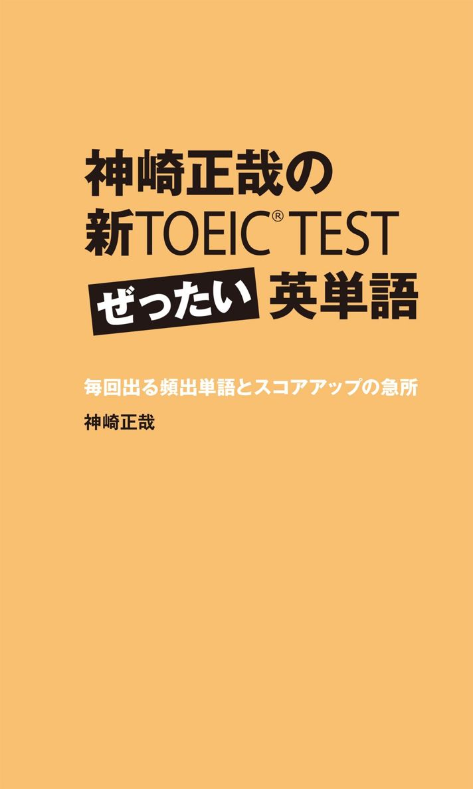
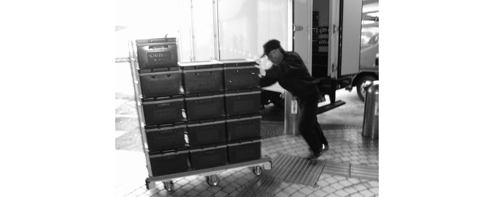

| 神崎正哉の新TOEIC TEST ぜったい英単語 毎回出る頻出単語とスコアアップの急所 | |
| 神崎 正哉 | |
| (2014) | |

本書は2007年発行の『新TOEIC® TESTウルトラ語彙力主義』を増補・改訂し、改題して刊行しました。
参考文献
Nation, I.S.P. (2001). Learning vocabulary in another language. Cambridge: Cambridge University Press
Oxford Advanced Learner's Dictionary 7th Edition
Longman Dictionary of Contemporary English 4th Edition
Collins COBUILD Advanced Learner's English Dictionary 4th Edition
Cambridge Advanced Learner's Dictionary 2nd Edition
研究社リーダーズ英和辞典第2版
大修館ジーニアス英和大辞典
国際ビジネスコミュニケーション協会（2005）「TOEICテスト新公式問題集」
国際ビジネスコミュニケーション協会（2007）「TOEICテスト新公式問題集Vol.2」
スペースアルク英辞郎 on the Web〈http://www.alc.co.jp/〉
編集協力 Anna Isozaki／永田雅子／O. R. P.
もくじ
Unit 01--10
Unit 11--50
Unit 51--88
TOEIC®スコアは語彙力で決まる!
TOEIC®スコアを伸ばすために一番大切なもの、それは語彙力です。
TOEIC®のみならず英語の検定試験全般にいえることですが、知っている単語の量が試験結果に大きな影響を与えます。「単語の意味を知っているから解ける、知らなければ解けない」ということが多いからです。
TOEIC®に関していえば、パート５とパート６の穴埋め問題では語彙力を試す問題が出題されます。パート７の読解問題でも文中で使われている語と同じ意味の語を選ぶ同義語問題があります。これらは語彙力が直接的に正解を選べるかどうかの決め手となります。また、パート５やパート６で出題される文法の問題も語彙力がないと解けないことがあります。例えばTOEIC®の頻出文法問題に能動態か受動態のどちらかを選ぶものがありますが、主語と動詞に使われている単語の意味が分からなければ、能動の関係があるのか受動の関係があるのか見極めることができないので、正解を選べません。文法の知識があっても語彙力不足だとその知識が正解選びに活かされないのです。
さらに語彙力は英語を聞いたり読んだりする際にも不可欠です。TOEIC®のリスニングセクションで音は聞きとれてもその単語の意味を知らなければ意味が理解できません。読解問題でも文章中に使われている語句が知らないものばかりだと読もうとしても理解できないことでしょう。したがってTOEIC®で良い結果を出すことを目指すのであれば、まずはTOEIC®で頻繁に使われる基本単語をしっかりマスターしなければなりません。特に初級学習者は新しく覚えたTOEIC®頻出語の数に比例してスコアが伸びていきます。
本書は私自身の受験経験に基づきTOEIC®の頻出語句を集めたものです。TOEIC®は「問題バンク方式」を取り入れており、同じような問題が繰り返し出題されます。当然その中で使われる語句も繰り返し出てきます。
よって頻出語句を覚えていれば、TOEIC®を受験する際、かなり高い確率でその語句に再会することになります。また、例文も実際のTOEIC®で使われたものと非常に近い形で再現しました。
本書は2007年に発刊された『新TOEIC® TESTウルトラ語彙力主義』を改訂したものです。TOEIC®頻出語彙はその当時とほとんど変化はありませんが、本書では、前書で取り上げられなかった頻出語句のリストを巻末に付けました。ぜひ、チェックしてください。
2011年 早春の候 神崎正哉
この本の使い方
この本は以下のように使うのが効果的です。
1. 問題を解く
各ユニット、初めに４択式穴埋め問題があります。まずはそれを解いてください。文章を理解できるか、選択肢の語句を知っているかどうか、自分の力を試しましょう。また、４択問題に使われている文章はTOEICでよく出るタイプのものです。この問題を解くことがTOEIC的な文章・文脈になれるための良い練習になります。
2. 正解と訳を確認する
ページをめくると正解が載っています。正しい選択肢を選べたかどうか確認してください。また問題文の日本語訳を読んで、正しく理解できていたか確認してください。
3. 解説を読む
次に選択肢に挙げられた語句の説明が続きます。それらの語句がどのように使われるのか例文を用いて説明してあります。例文はTOEICでそのまま出そうなものばかりです。丸ごと覚えてください。実際の試験で直接、得点に結びつきます。また、TOEICで役立つ派生語、同義語、反義語もできる限り掲載しました。一緒に覚えましょう。
4. 「新TOEICの急所」を読む
各ユニットの解説中に「新TOEICの急所」というコーナーがあります。ここにはTOEIC受験で役立つ攻略法と、語彙を学習する上でのアドバスを書きました。これもスコアアップに直結します。
単語の覚え方のコツ
1. 少しずつ覚える
単語は少しずつ覚えましょう。一度にたくさん覚えるよりも効果的です。例えば1週間に3時間30分を語彙学習にあてる場合、1日にまとめて3時間30分やって残りの6日間何もしないよりも、1日30分ずつ毎日やる方がはるかによく覚えられます。
2. 思い出し練習をする
記憶を確かなものにするには、一度覚えた単語を記憶の引き出しから取り出す練習が必要です。記憶の中から出し入れを繰り返すことで脳細胞間の伝達経路が強化され、しっかりと記憶に残るようになります。思い出し練習には単語カードを作るととても役立ちます。単語カードで新しい語句を覚えるのは地味な作業ですが、新しい語句を覚えるのにとても効果があります。
3. 寝る前に覚える
新しい単語を覚えた後、脳を休ませると記憶によく残ります。ですから、新しい単語を覚えるのに理想的な時間帯は就寝前です。
寝る前の15～30分を使い、新しい単語を覚える→翌朝、単語カードを使って思い出し練習をする→さらに夜、再び思い出し練習をする→そして寝る前、新しい単語を覚える。というように生活の中に語彙学習を組み込むようにしましょう。半端な時間を使って少しずつコツコツ続けることが肝心です。
4. 覚えられない単語は連想記憶術を使う
単語の中には覚えやすいものと覚えにくいものがあります。皆さんも「この単語は何回復習しても、忘れてしまう」という経験があると思います。そのような覚えにくい単語を記憶に定着させるには連想記憶術が役立ちます。これは音とイメージの助けを借りて記憶に残す方法です。例えばincreaseという語がなかなか覚えられないとします。increaseは名詞で「増加」、動詞で「増える、増やす」という意味です。まず、初めのステップとしてincreaseという音から連想される日本語を探します。「increase → インクリース → インクとリス」というような流れでインクとリスが得られます。次に「インク＋リス」を「増加、増やす、増える」に結びつけるイメージを描きます。「リスがインクの交換用カートリッジを集めている。そしてそれがどんどん溜まっていく。インクが増える」というような映像を頭に描いてください。「インク＋リス」が「増加、増やす、増える」につながります。increase = 「増加、増やす、増える」よりも「リスがインクを集めて、インクが増えていくイメージ」の方が記憶に残りやすいはずです。覚えにくい単語もこの方法を使えば覚えられます。何回復習しても忘れてしまう単語があったら、この方法を試してみてください。
Unit01
He's -------- a tie.
(A)putting on
(B)taking off
(C)wearing
(D)choosing
正解
(C)He'swearing a tie.
彼はネクタイをしている。
put onが衣服などを身につけるという「動作」を表すのに対し、wearは身につけている「状態」を表します。この写真ではネクタイをしている「状態」になっているので、wearingが適切です。もしネクタイを結んでいる最中の写真であれば、putting onを使います。
He's putting on a tie.
彼はネクタイを結んでいる。
take offは身につけている衣服、靴、メガネなどを「脱ぐ、外す」という意味です。
She's taking off her coat.
彼女はコートを脱いでいる。
また、「（飛行機が）離陸する」や「成功し始める、売れ始める」という意味もあります。
The plane took off at 7 o'clock.
その飛行機は7時に離陸した。
Our MP3 player is beginning to take off.
当社のMP3プレーヤーは今ちょうど人気が出始めている。
chooseは「選ぶ」という意味です。
He's choosing a tie.
彼はネクタイを選んでいる。
派生語 choice 「選択、品ぞろえ」
He has to make a choice between family and career.
彼は家庭か仕事かどちらかを選ばなければならない。
The menu offers a wide choice of dishes.
メニューにはたくさんの種類の料理が載っている。
The company has no choice but to accept the proposal.
その会社は提案を受け入れる以外、選択肢がない。
新TOEICの「急所」1
パート１ではput onとwearが頻繁に登場します。ネクタイ・背広姿の男性の写真に対して、 (A) He's putting on a tie. (B) He's wearing a jacket. と流れ、状態を表す(B)が正解という問題も、実際に出題されました。
Unit02
They're looking in the same --------.
(A) director
(B) direction
(C) directory
(D) directly
正解
(B)They're looking in the samedirection.
彼女たちは同じ方向を見ている。
directionは「方向」という意味を表します。前置詞inとともに用います。
She pointed in the opposite direction.
彼女は反対の方向を指さした。
新TOEICの「急所」2
パート５では前置詞自体が持つ意味を問う問題のほかに、ある語句との組み合わせ（コロケーション）を知っているかを試す問題が出ます。「directionは前置詞inと一緒に使う」というように、単語と前置詞をセットで覚えるようにしましょう。
またdirectionには「指示、道案内、使用説明」という意味もあります。この意味で使われる場合は複数形のdirectionsになるのが普通です。
Be sure to read the directions carefully before using this equipment.
この機器を使う前に必ず取扱説明書をよく読んでください。
directorには「重役、部長、所長、監督」などの意味があります。
Ms. Anderson is on the board of directors.
アンダーソンさんは取締役会のメンバーである。
directoryは「名簿、住所録、要覧」のことです。
I looked up the restaurant's number in the telephone directory.
私はそのレストランの番号を電話帳で調べた。
directlyは「直接に」という意味の副詞です。directoryとの発音の違いに注意しましょう。
The budget cut won't affect our project directly.
予算削減がわれわれのプロジェクトに直接影響を与えることはない。
新TOEICの「急所」3
パート５、６では、この問題のようにある単語の派生語が４つ並ぶものが最頻出です。このタイプの問題では、まず空欄に入る語が文中でどのような役割を果たしているか考え、その役割を果たすのに適切な品詞の語を選びます。例えば、主語として機能していたら名詞、目的語の場合も名詞、名詞を修飾していたら形容詞、動詞にかかっていたら副詞というように、品詞を決めます。同じ品詞の語が複数ある場合は、意味を考えて適切なものを選びます。
Unit03
The building -------- the river.
(A) oversees
(B) overlooks
(C) overwhelms
(D) overcomes
正解
(B)The buildingoverlooks the river.
その建物から川が見渡せる。
overlookは建物や部屋を主語にとり、そこから「～が見渡せる」という意味を表します。人が主語の場合は、「見落とす」「見逃す」という意味になります。
There is one important fact that you have overlooked.
あなたが見落としている重要な事実がひとつある。
I'll overlook your mistake this time.
今回はあなたのミスを見逃してあげます。
overseeは「監督する」という意味です。
同義語 supervise
Mr. Carter oversees all the company's advertising.
カーターさんが会社のすべての広報活動を監督している。
overwhelmは「圧倒する」という意味です。
Ms. Becket was overwhelmed by the amount of work she had to deal with.
ベケットさんは処理しなければならない仕事量に圧倒された。
派生語 overwhelming 「圧倒的な」
An overwhelming majority voted in favor of the proposal.
圧倒的多数がその提案に賛成票を投じた。
overcomeには「克服する」「圧倒する」という2つの意味があります。
We have to overcome a lot of difficulties.
私たちは多くの困難を克服しなければなりません。
Gordon was overcome by grief.
ゴードンは悲しみに打ちひしがれていた。
新TOEICの「急所」4
「悲しみに打ちひしがれる」というような人の心の状態は受動態で表します。パート５、６ではexciting / excited、interesting / interested、satisfying / satisfiedのように-ing形と-ed形のどちらかを選ばせる問題が出ます。答えを選ぶ際の指標のひとつとして、「人の心の状態」を表す語が求められている場合は-ed形、「人の心に働きかける作用」を表す語が求められている場合は-ing形、というルールを使ってください。
Unit04
They're sitting --------.
(A) hand in hand
(B) face to face
(C) back to back
(D) side by side
正解
(D)They're sittingside by side.
彼らは並んで座っている。
side by sideは「並んで」という意味です。next to「隣に」を使って言い換えることもできます。
They're sitting next to each other.
彼らは隣同士で座っている。
hand in handは「手をつないで」という意味です。
They're strolling hand in hand through the park.
彼らは手をつないで公園を散歩している。
また、go hand in handでは「（２つのことが）関連して起こる」という意味になります。
Poverty and poor health often go hand in hand.
貧困と健康障害は関連して起こることが多い。
face to faceは「向かい合って」という意味です。
They're standing face to face.
彼らは向かい合って立っている。
back to backは「背中合わせに」という意味のほかに、「連続して」という意味もあります。
Her appointments were scheduled back to back until midnight.
彼女は人と会う約束が夜中の12時まで立て続けに入っていた。
新TOEICの「急所」5
パート１では写真に写っている人・物の位置関係が答えを選ぶカギになる場合があります。side by side、face to face、back to backに加え、次の位置関係を示す前置詞を整理しておきましょう。between 「間に」、beside 「そばに、隣に」、along 「沿って」、in front of 「前に」、behind 「後ろに」、in the corner of 「隅に」
She's standing behind the counter.
彼女はカウンターの後ろに立っている。
The cars are parked in front of the building.
車は建物の前に止められている。
There is a sofa in the corner of the room.
部屋の隅にソファがある。
Unit05
-------- are crossing the street.
(A) Pedestrians
(B) Motorists
(C) Spectators
(D) Passengers
正解
(A)Pedestrians are crossing the street.
歩行者が道を渡っている。
pedestrianは「歩行者」という意味です。
The sidewalk was filled with pedestrians.
歩道は歩行者でいっぱいだった。
motoristは車を運転している人のことです。driverと同じ意味になります。
Three in five motorists break the speed limit on highways.
5人に3人の運転者は高速道路で制限速度を破る。
spectatorは「観客」という意味です。
Over 50,000 spectators turned out for the final.
50,000人の観客が決勝戦を見に来た。
passengerは交通機関を利用している「乗客」のことです。
The driver and six passengers were injured in the accident.
その事故で運転手と乗客6人が負傷した。
新TOEICの「急所」6
TOEICでは人を表す名詞が重要です。以下の単語も覚えておきましょう。
employee / worker / staff /personnel「従業員」（staffとpersonnelは集団を表す）
president「社長」
chief executive officer （略称CEO）「最高経営責任者」
vice-president「副社長」
chairman「会長、議長」
director / executive「重役」
founder「設立者」
manager「マネジャー、部長」
supervisor「監督者」
audience「聴衆」（集団を表す名詞）
applicant「応募者」
candidate「候補者」
customer / client / patron「顧客」
user「利用者」
purchaser「購入者」
account holder「口座名義人」
consumer「消費者」
diner「食事客」
shopper「買い物客」
owner「所有者」
guest「招待客、宿泊客」
host「（客をもてなす）主人、司会者」
listener「（ラジオなどを）聞く人」
viewer「（テレビなどを）見る人」
reader「読者」
subscriber「定期購読者」
patient「患者」
investor「投資家」
visitor「訪問者」
participant / attendee「参加者」
commuter「通勤者」
colleague / co-worker「同僚」
traveler / tourist「旅行者」
resident「住人」
citizen「市民」
cyclist「自転車に乗った人」
Unit06

Boxes are -------- on top of each other.
(A) packed
(B) sealed
(C) stacked
(D) assembled
正解
(C)Boxes arestacked on top of each other.
箱が積み重ねられている。
stackは動詞で「積み重ねる」という意味を表します。
They are stacking the shelves with goods.
彼らは棚を商品で満たしている。
同義語 pile、heap
He piled the boxes on top of one another.
彼は箱を積み重ねた。
She heaped more food onto my plate.
彼女は私の皿に料理を盛り足した。
stack、pile、heapは「積み重ね」という意味の名詞にもなります。
stackとpileがきちんと積み上げられた山を表すのに対して、heapは雑然と積み上げられたものを表します。
There is a stack / pile / heap of papers on his desk.
彼の机の上には書類の山がある。
packは動詞で「詰める、荷造りをする」という意味を表します。
I haven't finished packing my suitcase.
私はまだスーツケースに荷物を詰め終わっていない。
sealは動詞で「封をする」という意味を表します。
She sealed the box with tape.
彼女は箱にテープで封をした。
assembleは動詞で「組み立てる、集まる」という意味を表します。
Our bookshelves are easy to assemble.
当社の本棚は簡単に組み立てられます。
We were told to assemble in the lobby.
私たちはロビーに集まるように言われた。
新TOEICの「急所」7
stackとpileはパート1で頻出です。～is / are stacked、～is / are piledという-ed形を用いた表現と、a stack / pile of～という名詞の用法が特に重要です。
Unit07
She's -------- a plastic bag.
(A) shopping
(B) handing
(C) filling
(D) carrying
正解
(D)She'scarrying a plastic bag.
彼女はビニール袋を持っている。
carryは「携行する、運ぶ」という意味の動詞です。
Let me carry your bag for you.
かばんをお持ちします。
また、店を主語にとると「（商品を）取り扱っている」という意味になります。
The shop carries a wide range of electrical appliances.
その店は多様な電化製品を販売している。
句動詞のcarry out「行う」はTOEICで頻出です。
同義語 conduct
The marketing department is carrying out / conducting a survey.
営業部は調査を行っている。
shopは動詞では「買い物をする」という意味になります。
Mr. Jackson always shops at the local supermarket.
ジャクソンさんはいつも地元のスーパーで買い物をする。
handは動詞では「手渡す」という意味になります。
She's handing a notebook to the man.
彼女は男性にノートを手渡している。
fillは「詰める、満たす」という意味です。
She filled the bucket with water.
彼女はバケツを水でいっぱいにした。
また、「（職を）補充する」という意味もあります。
The vacancy has already been filled.
その欠員はもうすでに補充されました。
句動詞のfill out「記入する」はTOEICで頻出です。
同義語 complete
Please fill out / complete the following questionnaire.
次のアンケートにご記入ください。
新TOEICの「急所」8
パート１では、写真の中の人物の行っている動作が重要です。動詞をしっかり聞き取り、写真中で行われている行為を適切に表しているかどうか考えましょう。
Unit08
They're -------- the stairs.
(A) descending
(B) ascending
(C) climbing
(D) lowering
正解
(A)They'redescending the stairs.
彼らは階段を下りている。
descendは高い位置から低い位置へ移動することを表す動詞です。go downを使って言い換えることができます。
They're going down the stairs.
彼らは階段を下りている。
in descending orderで「（数値、重要度などの）高い順に」という意味になります。
The words are listed in descending order of frequency.
単語は使用頻度の高い順に掲載されている。
ascendとclimbは、ともに「上る」という意味があります。
They're ascending / climbing the stairs.
彼らは階段を上っている。
これはgo upを使って言い換えることができます。
They're going up the stairs.
彼らは階段を上っている。
in ascending orderで「（数値、重要度などの）低い順に」という意味になります。
The hotels are listed in ascending order of price.
ホテルは値段の低い順に掲載されている。
lowerは「降ろす、下げる」という意味を表します。
They're lowering the flag.
彼らは旗を降ろしている。
The Central Bank decided to lower interest rates.
中央銀行は金利を下げることを決めた。
新TOEICの「急所」9
descendは難しい単語です。パート1では比較的易しい語句が使われるのが普通ですが、このような難易度の高い語もいくつか入ります。そのような問題は消去法を使って解きましょう。「この文は知らない単語があって理解できないが、ほかの３つは写真と合わないので、これが答えだろう」というようにして、答えを選んでください。
Unit09
Two men are -------- on the sofa.
(A) seated
(B) chaired
(C) counted
(D) relied
正解
(A)Two men areseated on the sofa.
２人の男性がソファに座っている。
seatは名詞の「席」のほかに、動詞で「座らせる、席に案内する」という意味があります。過去分詞のseatedは座った状態を表します。
Please remain seated during takeoff.
離陸の際、席を立たないでください。
問題文は、sit「座る」を使って言い換えることができます。
Two men are sitting on the sofa.
２人の男性がソファに座っている。
次の３つの表現はどれも「どうぞお座りください」という意味を表します。
Please sit down / have a seat / be seated.
どうぞお座りください。
chairは名詞では「いす」という意味ですが、動詞では「議長を務める」という意味になります。
Ms. Lawrence chairs the weekly staff meeting.
ローレンスさんは毎週行われるスタッフ・ミーティングの進行役を務める。
countは「数を数える、数に入れる」という意味です。
There were about 300 people on board the ship, not counting the crew.
その船には乗組員を数に入れないで約300人が乗っていた。
句動詞count onは「頼りにする、当てにする」という意味です。
You can count on me.
私を当てにしていいですよ。
relyはrely onの形で用いられ、「頼る、当てにする」という意味を表します。
The magazine relies heavily on advertising revenue.
その雑誌は広告収入に大きく依存している。
新TOEICの「急所」10
パート１で室内の写真が使われる場合、家具が答えに絡むものが多くあります。ここではsofa 「ソファ」が使われていますが、desk 「机」、chair 「いす」、table 「テーブル」、bed 「ベッド」、bookshelf 「本棚」なども頻出です。
Unit10
He's -------- a machine.
(A) driving
(B) operating
(C) lifting
(D) pushing
正解
(B)He'soperating a machine.
彼は機械を操作している。
operateは「（機械などを）操作する」という意味があります。また、「（会社などを）運営する、経営する」という意味もあります。
The company operates a chain of restaurants nationwide.
その会社はレストランのチェーン店を全国で運営している。
operating costsは「経費、運営費」という意味です。
We are trying to cut operating costs.
当社は経費削減に努めている。
operating systemはコンピュータのOSのことです。
Microsoft launched its new operating system last week.
マイクロソフト社は先週、新しいOSの発売を開始した。
operateには「手術をする」という意味もあります。名詞の「手術」はoperationです。
She had an operation to remove her appendix last year.
彼女は昨年、盲腸を摘出する手術を受けた。
driveには「（車を）運転する」という意味に加え、「車で人を送る」という意味もあります。
Can you drive me to the station?
駅まで車で送ってもらえますか？
liftは「持ち上げる、（禁止令などを）解除する」という意味です。
The government lifted its ban on US beef imports.
政府は米国産牛肉の輸入禁止を解除した。
pushは「押す」という意味が基本です。
She's pushing a stroller.
彼女はベビーカーを押している。
新TOEICの「急所」11
屋外で作業する様子を写した写真はパート１で頻出です。そこで使われる語句には、ladder 「はしご」、hard hat 「作業用ヘルメット」、lean 「立てかける、立てかけられる」、under construction 「建設中」、construction site 「建築現場」、load 「積み込む」、work 「作業をする」、install 「設置する」などがあります。
コラム 知らない単語の見分け方
よく見かける単語のはじめの文字、単語のおわりの文字を使って、効果的に単語を覚えることができます。単語の初めの数文字を接頭辞（prefix）、終わりの数文字を接尾辞（suffix）と言います。接頭辞・接尾辞の持つ意味を知っていると初めて見る単語の意味を予想できる場合があります。例えばnew「新しい」という形容詞を知っているとします。そしてre-という接頭辞が「再び」を意味するということを知っているとします。するとrenewという単語を初めて見たとき、「re-とnewだから、再び新しい、再び新しくするかな？」と大体の意味を予測することができます（renewは動詞で「新しくする、更新する」）。または-ableという接尾辞に「～できる」という意味が含まれているということを知っていると、renewableという単語の意味を知らなくても「きっとrenewできるという意味だろうな」と予想がつきます（renewableは形容詞で「更新できる、再生可能な」）。このような接頭辞・接尾辞の知識は新しい単語を覚えるときにも役立ちます。「renewはre-（再び）とnew（新しい）からできているから、こういう意味になるんだ」というように自分が持っている知識に関連付けて覚えると、記憶によく残ります。以下は代表的な接頭辞・接尾辞です。
●接頭辞
反対の意味を表す接頭辞（Unit 53参照）
in- inexpensive （値段が高くない）→expensive （値段が高い）の反対
im- impractical （実用的でない）→practical （実用的な）の反対
un- unacceptable （受け入れられない）→acceptable （受け入れられる）の反対
dis- disadvantage （不利な点）→advantage （有利な点）の反対
il- illegible （判読できない）→legible （判読できる）の反対
ir- irrelevant （関係のない）→relevant （関係のある）の反対
「再び」の意味を表すre-
reopen = 「再びopen」→再開する、再び開く →Unit 21参照
「程度が過ぎる」ことを表すover-
overvalue = 「valueしすぎ」→過大評価する
「程度が足りない」ことを表すunder-
underestimate = 「少なくestimate」→低く見積もる
「一緒」であることを表すco-
co-worker = 「いっしょに働いている人」→同僚
「前」を意味するpre-
prearrange = 「前にarrange」→前もって取り決める →Unit 36参照
「超えている」ことを表すout-
outweigh = 「重さが超えている」→より重い、より重要である
●接尾辞
接尾辞は品詞を知る手がかりになります。パート５、６で出題される品詞が鍵となる問題で役立ちます。
名詞であることを示すもの
-ment payment （支払い）← pay （支払う）の名詞形
-tion satisfaction （満足）← satisfy （満足させる）の名詞形→Unit 14&32参照
-sion expansion （拡張、発展）← expand （拡張する、発展させる）の名詞形
-lity reliability （信頼性）← reliable （信頼できる）の名詞形
-tivity creativity （創造力）← creative （創造的な）の名詞形
-logy biology （生物学） -logyは主に学問の名称を表す。
-ery delivery （配達）← deliver （配達する）の名詞形
-al approval （承認）← approve （承認する）の名詞形
注：-alで終わる形容詞もある。例：typical （典型的な）、physical （身体的な）
「人」を表すもの
-er employer （雇用者）←employ （雇う）する人
-ee employee （従業員）←employされる人
-or inspector （検査官）←inspect （検査する）する人
-ist scientist （科学者）←science （科学） の専門家
-ant applicant （応募者）←apply （申し込む）する人
注：-antで終わる形容詞もある。例：brilliant （すばらしい）、significant （重要な）
-ian comedian （喜劇役者）←comedy （喜劇）をする人
形容詞であることを示すもの
-tive effective （効果のある）← effect （効果）の派生語
-ous delicious （とてもおいしい）
-able profitable （利益になる）←profit （利益）を出せる
-ible accessible （利用可能な）←access （利用する）できる
-ableと-ibleは能力、可能性があることを表す。→Unit 19参照
-ful thoughtful （思いやりのある）←thought （考え）がいっぱい
-fulは「たくさんある」ことを表す。→Unit 27参照
-less endless←end （終わり）のない
-lessは「ない」ことを表す。→Unit 58参照
-al natural （自然な）
-ic economic （経済の）
副詞であることを示すもの
-ly strongly （強く）← strong （強い）の派生語
注：-lyで終わる語で、形容詞と副詞が同形のものもある。
例：early （早い、早く）、yearly （年１回の、毎年）、friendly （愛想の良い、親しみやすい）は形容詞の用法のみ。
動詞であることを示すもの
-ize modernize （現代的にする）←modern （現代の、最新の）にする
-fy clarify （はっきりさせる）←clear （明確な）にする
-en shorten （短くする）←short （短い）にする
参考：en-は動詞を作る接頭辞にもなる。
例：enlarge （大きくする）、 ensure （確実にする）
Unit11
M：When did they -------- the report to the manager?
W：Last Friday.
(A) submit
(B) admit
(C) permit
(D) commit
正解
(A)M：When did theysubmit the report to the manager?
W：Last Friday.
男：彼らはいつ部長に報告書を提出したのですか？
女：先週の金曜日です。
submitは「提出する」という意味です。また、「服従する、降参する」という意味もあります。名詞形はsubmission「服従、提出」です。
The deadline for the submission of proposals is March 31.
企画書提出の締め切りは3月31日です。
admitは「認める、入場を許可する」という意味の動詞です。「～したことを認める」という場合、後ろに-ing形またはto＋-ing形が続きます。
He admitted (to) taking bribes.
彼はわいろを受け取ったことを認めた。
名詞形はadmission「承認、入れること、入場料」です。
Admission is free for children under 12.
12歳以下のお子様は入場料が無料です。
permitは動詞で「許可する、可能にする」、名詞で「許可証」という意味があります。動詞の場合はアクセントが後ろ（permit）、名詞の場合は前（permit）です。permission「許可」という名詞もあります。
Your work permit is not renewable.
あなたの労働許可証は更新できません。
commitは「（罪などを）犯す」という意味です。またbe committed toで「～に全力を傾ける」という意味を表します。
She is committed to conserving wildlife.
彼女は野生生物を保護することに全力を注いでいる。
新TOEICの「急所」12
パート２には、質問のはじめにくるWho、What、When、Where、Howなどの疑問詞を正確に聞き取れるかどうかで勝負が決まる問題が多くあります。文頭の疑問詞に神経を集中させてください。
Unit12
W：How many people have -------- for the position?
M：At least forty.
(A) provided
(B) known
(C) applied
(D) intended
正解
(C)W：How many people haveapplied for the position?
M：At least forty.
女：何人、その職に応募してきましたか？
男：少なくとも40人です。
apply forで「（職に）応募する」という意味です。「（会社・大学などに）応募する」という意味ではapply toになります。
Becky applied to three universities and was accepted by two of them.
ベッキーは3つの大学に応募して、そのうち2校に合格した。
また、apply toには「適用する」という意味もあります。
The same rules apply to part-time workers.
同じ規則がパート従業員にも適用されます。
派生語のapplication「応募、適用」やapplicant「応募者」も重要です。provideは「提供する」という意味です。provide 〈物〉 for 〈人〉 とprovide 〈人〉 with 〈物〉 という2つの用法に注意しましょう。
We provide counseling services for small businesses.We provide small businesses with counseling services.
私たちは中小企業にカウンセリングサービスを提供しています。
be known for で「～で有名である」という意味になります。
The region is known for its beautiful nature.
その地域は美しい自然で知られている。
be intended for で「～向けの、～を対象とした」という意味になります。
The TV program is intended for children aged 8-12.
そのテレビ番組は8歳から12歳の子供を対象としている。
新TOEICの「急所」13
Howで始まる質問は、後ろに続く語とセットでとらえましょう。 How much、How many、How long、How farなど、いろいろな組み合わせがTOEICで使われます。
Unit13
W：Did you have any -------- finding our office?
M：No, not at all.
(A) trouble
(B) issue
(C) measure
(D) flaw
正解
(A)M：Did you have anytrouble finding our office?
W：No, not at all.
男：当社のオフィスを見つけるのに苦労しましたか？
女：いいえ、まったくそんなことはありませんでした。
have trouble～ingで「～するのに苦労する」という意味を表します。have difficulty (in) ～ingも同じ意味になります（difficultyの後ろのinはあってもなくてもOKです）。
We had great difficulty in finding a site for a new factory.
当社は新しい工場の建設用地を探すのに非常に苦労した。
またtroubleは動詞で「困らせる、迷惑をかける、心配させる」という意味もあります。
The employees are deeply troubled by the proposed merger plan.
従業員は合併計画によってひどく不安にさせられている。
issueは名詞で「問題、争点、（雑誌の）号」、動詞で「発表する、発行する」という意味があります。
Finance Ministers from the region held a meeting to discuss economic issues.
その地域の財務大臣は経済問題を話し合うため会合を開いた。
The governor issued a statement denying the allegations.
知事は疑惑を否定する声明を出した。
measureは名詞で「方策、目安、基準、量」、動詞で「測定する、評価する」という意味があります。
The company has introduced new measures to protect consumers against fraud.
その会社は消費者を詐欺から守る方策を講じた。
flawは「欠陥、欠点」という意味です。
There is a fatal flaw in the security system.
警備システムに致命的欠陥がある。
新TOEICの「急所」14
英語の単語には、動詞と名詞が同形のものがあります。名詞として使われているのか動詞として使われているのかは、構文上の位置・機能から判断します。
Unit14
W：Congratulations on your -------- to branch manager!
M：Thank you.
(A) confirmation
(B) appreciation
(C) promotion
(D) consideration
正解
(C)W：Congratulations on yourpromotion to branch manager!
M：Thank you.
女：支店長への昇進おめでとうございます。
男：ありがとうございます。
promotionは「昇進」のほかに「宣伝、促進」という意味もあります。
The supermarket is doing a special promotion of fruit juice.
そのスーパーはフルーツジュースの特別キャンペーンを行っている。
動詞のpromoteは「（人を）昇進させる、（商品を）宣伝する、促進する」などの意味があります。
Ms. Lee was promoted to division director.
リーさんは事業部長に昇進した。
Canon launched an advertising campaign to promote its new digital camera.
キヤノンは新しいデジタルカメラの宣伝をするために広告キャンペーンを始めた。
confirmationは「確認」という意味です。動詞はconfirm「確認する」です。
We need your written confirmation of your order.
当社は貴社の書面による注文の確認が必要です。
appreciationは「感謝、評価」という意味で、動詞はappreciate「感謝する、理解する、評価する」です。
I would appreciate it if you could reschedule our meeting.
ミーティングの予定を変更していただけたら助かります。
considerationは「考慮」という意味で、動詞はconsider「考慮する」です。
Your proposal is currently under consideration.
あなたの企画案は現在検討されているところです。
新TOEICの「急所」15
-tionまたは-sionで終わる語は名詞の場合がほとんどです（まれに動詞）。このような接尾辞（単語の終わりの数文字）の知識は語彙力を上げるのに役立ちます。少しずつ覚えましょう。
Unit15
W：Is Ms. Roberts -------- to come to the party?
M：Probably not.
(A) strongly
(B) kindly
(C) cordially
(D) likely
正解
(D)W：Is Ms. Robertslikely to come to the party?
M：Probably not.
女：ロバートさんはパーティーに来そうですか？
男：多分、来ないでしょう。
be likely to で「～しそうである、～する可能性が高い」という意味です。likelyは形容詞で、名詞の前にくる場合もあります。
What's the most likely outcome of the election?
選挙結果はどうなる可能性が一番高いですか？
stronglyは形容詞strong「強い」の副詞形です。
The president was strongly opposed to the proposal.
社長はその提案に強く反対した。
It is strongly recommended that you install anti-virus software on your computer.
コンピュータにアンチウイルスソフトをインストールすることを強くお勧めします。
kindlyは形容詞kind「親切な、優しい」の副詞形です。
Mr. Martin kindly agreed to speak at the event.
マーティンさんはそのイベントでスピーチをすることを親切に引き受けてくれた。
cordiallyは「心から、誠意を持って」という意味の副詞です。フォーマルな語です。
You are cordially invited to attend our annual meeting of shareholders.
株主年次総会に謹んでご招待いたします。
新TOEICの「急所」16
パート５、６では、選択肢を選ぶとき、コロケーション（語と語の組み合わせ）の知識が役立つ場合があります。例えば上記のような be strongly opposed / recommended、kindly agree、be cordially invitedなどの組み合わせを知っていると、迷わずに答えを選べます。「この語はこの語と一緒に使う」というように、セットで覚えるようにしてください。
Unit16
M：What is the -------- of your visit to Malaysia?
W：I'm here on business.
(A) date
(B) cost
(C) length
(D) purpose
正解
(D)M：What is thepurpose of your visit to Malaysia?
W：I'm here on business.
男：マレーシアへの入国の目的は何ですか？
女：仕事でここに来ています。
（D）のpurpose「目的」を使うと意味の通る会話になります。
for / with the purpose of ～ingでは「～する目的で」という意味になります。
A meeting was called for the purpose of electing a new leader.
新しい代表を選出する目的で会議が招集された。
on purposeは「故意に、わざと」という意味になります。deliberatelyと同義です。
She dropped the document on purpose.
彼女はその書類をわざと落とした。
dateは「日にち」という意味です。
We need to fix a date for the next meeting.
次回のミーティングの日にちを決める必要があります。
costは名詞で「費用」、動詞で「（費用が）かかる」という意味です。動詞は過去形・過去分詞形もcostです。
The company is trying to cut labor costs by 20%.
その会社は人件費を20％削減しようとしている。
The five-course dinner cost us 100 dollars each.
その5コースのディナーは一人100ドルかかった。
lengthは「（空間的・時間的）長さ」という意味です。
Each seminar is 90 minutes in length.
セミナーはそれぞれ90分の長さです。
新TOEICの「急所」17
What's the purpose of your visit? は入国審査の際、よく尋ねられる質問です。パート２ではこのように現実によく使われる決まり文句を知っていると有利です。また、海外旅行の際にも役立ちます。
Unit17
W：Do you -------- like going for a swim after work?
M：No, I'm much too tired.
(A) look
(B) feel
(C) sound
(D) fancy
正解
(B)W：Do youfeel like going for a swim after work?
M：No, I'm much too tired.
女：仕事の後、泳ぎに行かない？
男：いや、やめておくよ。疲れているから。
feel like ～ingで「～したい」という意味です。ここではDo you feel like ～ing?という疑問文で「～したいですか?＝しましょうよ」という誘いの意味を表しています。Would you like to ～?やDo you want to ～?（カジュアルな表現）も人を誘うときに使われます。
Do you want to play tennis after work?
仕事の後、テニスしない？
また、feel likeは「～のような感じがする」という意味にもなります。
This material feels like silk.
この素材はシルクのような感触がする。
look likeは「～のように見える」という意味になります。
The new manager looked like a friendly person.
新しいマネジャーは親しみやすい人のように見えた。
sound likeは「～のように聞こえる」という意味になります。
It sounds like you had a great time in Hawaii.
ハワイで素晴らしい時間を過ごしたようですね。
fancyはlikeなしで、Do you fancy ～ing? の形で使われます。意味はDo you feel like ～ing? と同じで、「～したいですか？＝～しましょうよ」です。なお、このDo you fancy ～ing? はイギリス英語の表現です。
Do you fancy going for a drink after work?
仕事の後、一杯飲みに行きませんか？
lengthは「（空間的・時間的）長さ」という意味です。
Each seminar is 90 minutes in length.
セミナーはそれぞれ90分の長さです。
新TOEICの「急所」18
人を誘う表現の代表はLet's ～.ですが、上記のようなDo you feel like ～ing?などを使って、誘うこともできます。このような表現はパート２でよく使われます。「誘っているんだな」ということを瞬時に判断できると答えが選びやすくなります。
Unit18
W：Can I pay by credit card, or do I have to pay cash?
M：-------- is fine.
(A) Another
(B) Either
(C) Every
(D) All
正解
(B)W：Can I pay by credit card, or do I have to pay cash?
M：Either is fine.
女：クレジットカードで支払うことはできますか？ それとも現金で払わなければなりませんか？
男：どちらでも構いません。
この問題ではeitherは2者のうちの「どちらでも」という意味を表します。2者の両方を指す場合もあります。
There are entrances at either side of the building.
その建物の両側に入り口がある。
また、either A or Bでは「AかBのどちらか一方」という意味になります。
You can choose either French fries or mashed potatoes.
フライドポテトかマッシュポテトのどちらかをお選びいただけます。
anotherは「もうひとつ、もう一人」という意味です。
We need to hire another assistant.
アシスタントをもう一人雇う必要があります。
everyは「あらゆる、毎～、～ごとに」という意味を表します。
Thousands of tourists visit Italy every year.
何千人もの観光客が毎年イタリアを訪れる。
allは「すべての」という意味です。at all timesで「いつも」という意味になります。
同義語 always
Please keep the doors locked at all times.
いつもドアに鍵をかけておいてください。
新TOEICの「急所」19
either A or B「AかBかどちらか」、neither A nor B「AもBも～でない」、both A and B「AとBの両方」、between A and B「AとBの間」はパート５、６で頻出です。この組み合わせのうち、ひとつは、ほぼ毎回出題されます。
Unit19
M：Are there any tickets -------- tonight's concert?
W：Sorry, they're all sold out.
(A) agreeable
(B) acceptable
(C) accountable
(D) available
正解
(D)M：Are there any ticketsavailable for tonight's concert?
W：Sorry, they're all sold out.
男：今夜のコンサートのチケットはまだありますか？
女：すみません、すべて売り切れました。
availableは「入手できる、利用できる、空いている」という意味です。
We will send you our new catalog as soon as it becomes available.
新しいカタログが入り次第、お送りいたします。
名詞形はavailability「利用・入手の可能性、空き状況」です。
Please let me know your availability for the next three weeks.
向こう3週間で、あなたのご都合のよい日をお知らせください。
agreeableは「心地よい、合意できる、賛成する」という意味です。動詞agree「合意する」の形容詞形です。
The deal was agreeable to both sides.
その取引は双方にとって合意できるものだった。
acceptableは「受け入れることができる」という意味です。動詞accept「受け入れる」の形容詞形です。
Air pollution in the city has exceeded acceptable levels.
都市部での大気汚染は許容範囲を超えている。
accountableは「責任がある、説明する義務がある」という意味です。動詞account「責任をとる、説明する」の形容詞形です。
Managers should be held accountable for their decisions.
部長は自分の決定に対して責任を負うべきである。
新TOEICの「急所」20
-ableまたは-ibleで終わる形容詞はable「～できる」の意味を持っています。例えばacceptableは「acceptできる」、agreeableは「agreeできる」というように、もとになっている動詞の表す行為が可能であるという意味を表します。このタイプの形容詞は、able「できる」との関連性を考えると意味がつかみやすくなります。
Unit20
W：Would you like to -------- a taxi to the station?
M：Yes, that would be great.
(A) arrive
(B) divide
(C) head
(D) share
正解
(D)W：Would you like toshare a taxi to the station?
M：Yes, that would be great.
女：駅まで一緒にタクシーで行きませんか？
男：はい、とても助かります。
shareは動詞では「分ける、共用する」という意味です。
Mr. Burton does not like sharing ideas with his coworkers.
バートンさんは同僚と考えを分かち合うことを好まない。
名詞では「分け前、分担、市場占有率、株」などの意味があります。
The computer manufacturer is trying to increase its market share in Japan.
そのコンピュータメーカーは日本における市場占有率を上げようとしている。
arriveは「到着する、届く」という意味です。
We arrived at the station on time.
私たちは時間どおりに駅に着いた。
名詞形はarrival「到着」です。
反義語 departure「出発」
Norfolk International Airport has over 400 arrivals and departures daily.
ノーフォーク国際空港は1日400を超える発着がある。
divideは「分ける」という意味です。shareにも「分ける」という意味がありますが、divideには「共用する」という意味はありません。
The participants will be divided into small groups.
参加者は少人数のグループに分けられます。
headは動詞では「向かう、先頭に立つ、率いる」という意味があります。
Where are you heading?
どこへ向かっているんですか？
新TOEICの「急所」21
Would you like～?「～しませんか?」やThat would be great.「それは助かります」 は会話でよく使われる表現です。このような表現をたくさん知っているとパート２でも役立ちます。少しずつ覚えるようにしましょう。
Unit21
M：How often do you have to -------- the light bulbs?
W：They usually last two years.
(A) replace
(B) reconfirm
(C) review
(D) reflect
正解
(A)M：How often do you have toreplace the light bulbs?
W：They usually last two years.
男：どのくらいの頻度で電球を交換する必要がありますか？
女：通常2年持ちます。
replaceは「交換する、後任となる」という意味です。
Mr. Newman will be replacing Ms. Kenton as personnel manager.
ニューマンさんはケントンさんの後任として人事部長になる。
名詞形はreplacement「交換、交代、交換品、交代要員」です。
We are looking for a suitable replacement for Ms. Harris.
私たちはハリスさんの後任として適格な人を探している。
reconfirmは「再確認する」という意味です。
Please reconfirm your flight 72 hours before departure.
出発の72時間前にフライトの再確認をしてください。
reviewは「見直す、復習する、再審査する、精査する、批評する」という意味です。
The board is reviewing the budget proposal.
取締役会は予算案を検討している。
また、名詞では「再調査、見直し、論評、復習」などの意味があります。
The terms of the contract are under review.
契約条件の見直しが行われている。
reflectは「反射する、反映する、熟考する」という意味です。
The trees are reflected on the water.
木が水面に映っている。
Mr. Higgins reflected on his successes and failures.
ヒギンスさんは自分の成功と失敗についてよく考えた。
新TOEICの「急所」22
re-は「再び」という意味を持つ接頭辞です。re-で始まる単語に出会ったら、「再び」の意味を持つかどうか、考えてください。記憶に定着しやすくなります。
Unit22
W：What time is the meeting -------- to begin?
M：It starts in half an hour.
(A) suppose
(B) supposing
(C) supposed
(D) supposedly
正解
(C)W：What time is the meetingsupposed to begin?
M：It starts in half an hour.
女：ミーティングは何時に始まることになっていますか？
男：30分後に始まります。
be supposed to で「～することになっている、～しなければならない、～と思われている」という意味を表します。
I was supposed to finish the revision by Wednesday, but I couldn't.
私は見直しを水曜日までに終わらせなければならなかったが、できなかった。
This restaurant is supposed to be the best in town.
このレストランは町で一番ということになっている。
You are not supposed to open the envelope.
あなたは封筒を開けてはいけない。
supposeは「思う」という意味の動詞です。I supposeはI guessやI thinkと同じ意味になります。
I suppose if it rains, we'll have to cancel our picnic plans.
もし雨が降ったら、ピクニックの計画を中止しなければならないと思いますよ。
supposingは「もし～だと仮定したら」という意味で使われます。
Supposing the company rejects all of our demands, what will we do?
もし会社側がわれわれの要求をすべて拒否したら、どうしますか？
supposedlyは「たぶん、おそらく、推測するところでは」という意味の副詞です。
Mr. Jacob is supposedly doing research in Florida.
ジェイコブさんはおそらくフロリダで調査をしている。
新TOEICの「急所」23
ある語の派生語と変化形が選択肢に４つ並ぶタイプの問題がパート５、６では最頻出です。まず、空欄に入る語の構文上の機能を考え、品詞を割り出します（例えば名詞にかかっているから形容詞、動詞の目的語だから名詞、というように）。そして対応した品詞を選択肢から選びます。同じ品詞の語が複数ある場合は、意味を考えて答えを選んでください。
Unit23
M：Who's in -------- of making the travel arrangements for the convention?
W：Mr. Richards, in personnel, is handling that.
(A) charge
(B) spite
(C) lieu
(D) favor
正解
(A)M：Who's incharge of making the travel arrangements for the convention?
W：Mr. Richards, in personnel, is handling that.
男：会議への旅の手配は誰が担当ですか？
女：人事課のリチャーズさんがやっています。
in charge ofで「～を担当している、～の責任者である」という意味です。responsible for 「～の責任がある」も近い意味を表します。
The manager put Cathy in charge of the project.
部長はキャシーをそのプロジェクトの責任者にした。
in spite ofは「～にもかかわらず」という意味です。
The company made record profits last year in spite of increased competition.
競争の激化にもかかわらず、その会社は昨年、過去最高の利益を記録した。
in spite ofの同義語に、despiteがあります。
A new airport was built in the area, despite protests from local residents.
地元住民の抗議にもかかわらず、その地域に新しい空港が建設された。
in lieu ofは「～の代わりに」という意味です。
同義語 instead of
Mr. Brown gave a speech at the conference in lieu of Mr. Lee, who was unable to attend.
その会議では、出席できなかったリーさんに代わってブラウンさんが演説をした。
in favor of は「～に賛成して、～のために」という意味です。
I'm all in favor of flexible working hours.
私はフレックスタイム制に大賛成です。
新TOEICの「急所」24
パート２では、質問文中に使われている語句と違うものを使って同じ意味を伝える応答が正解になる場合が多くあります。例えば上の問題では、質問文中のin charge of「担当している」が応答中のhandling「やっている」に対応しています。形ではなく、意味がかみ合うかどうかがポイントになります。
Unit24
W：Isn't the quarterly report -------- soon?
M：Yes, the deadline is the day after tomorrow.
(A) due
(B) good
(C) must
(D) owing
正解
(A)W：Isn't the quarterly reportdue soon?
M：Yes, the deadline is the day after tomorrow.
女：四半期の報告書はもうすぐ締め切りではなかったですか？
男：はい、締め切りは明後日です。
dueは形容詞で「期限である、支払われるべき」という意味があります。また、「～することになっている」という意味もあります。
The president is due to visit our branch next week.
社長は来週、私たちの支店を訪れることになっている。
due to では「～のために」という意味になります。
同義語 because of
My flight was cancelled due to technical problems.
私の便は機械的な故障でキャンセルされた。
名詞だと「会費」という意味になります。この意味で用いられる場合、常に複数形duesになります。
同義語 fees
Sue didn't pay her dues last month.
スーは先月、会費を払わなかった。
goodは「よい」のほかに「有効である」という意味もあります。
My passport is good for another two years.
私のパスポートはあと2年間有効です。
mustは名詞で「必ず必要なもの」という意味になります。
At least two years of sales experience is a must.
最低2年のセールスの経験が必要です。
owing toで「～のため」という意味になります。
同義語 because of、due to
The departure was delayed owing to bad weather.
悪天候のため出発が遅れた。
新TOEICの「急所」25
質問ではdue「期限である」という形容詞が使われていますが、応答ではdeadline「締め切り」という名詞を使って返事をしています。パート２でよくあるパターンです。
Unit25
W：Why did you come to work so early this morning?
M：In order to -------- the heavy traffic.
(A) divert
(B) flow
(C) avoid
(D) turn
正解
(C)W：Why did you come to work so early this morning?
M：In order toavoid the heavy traffic.
女：なぜ今朝はそんなに早く出勤したんですか？
男：交通渋滞を避けるためです。
avoidは「避ける」という意味です。朝早く出勤する理由として、「交通渋滞を避ける」というのが自然な応答です。
「～することを避ける」という意味を表す場合、avoidの後ろには動詞の-ing形が続きます。
You should avoid accessing our online banking services through shared computers.
他人と共用しているコンピュータから当銀行のオンライン・サービスにアクセスするのは避けてください。
divertは「そらす、迂回させる」という意味です。
Eastbound traffic is being diverted due to an accident.
事故のため東方面に向かう車は迂回させられています。
名詞形はdiversion「迂回、流用、気晴らし」です。
The government is considering a diversion of public funds to the private sector.
政府は民間への公的資金の流用を検討している。
flowは「流れる」という意味です。
Traffic is flowing smoothly on all roads going out of the city.
市外に向かうすべての道路で交通はスムーズに流れています。
turnには「曲がる、変化する、回す」などの意味があります。
The road turns sharply after the pond.
池を過ぎるとその道は急激に曲がっている。
新TOEICの「急所」26
理由を問うWhyの質問に対してBecause「なぜなら」を使って答えることも可能ですが、To ～やIn order to ～のような、to不定詞を含む表現もよく用いられます。パート２ではWhyに対してBecauseで答えることのほうが少ないくらいです。
Unit26
M：How far is the convention center from here?
W：Only a few minutes --------.
(A) long
(B) away
(C) far
(D) apart
正解
(B)M：How far is the convention center from here?
W：Only a few minutesaway.
男：コンベンション・センターはここからどのくらいですか？
女：ほんの数分です。
awayは「離れて」という意味です。a few minutes awayで「数分で行ける距離にある」という意味になります。時間的に離れていることも表せます。
My birthday is still months away.
私の誕生日はまだ何カ月も先です。
また、「不在である、欠席している」という意味もあります。
同義語 absent
Mr. Stuart has been away from work for a week.
スチュアートさんは1週間仕事を休んでいる。
longは「長い」という意味です。物理的長さと時間的長さの両方に使えます。
The report is ten pages long.
その報告書は10ページの長さである。
The computer course is 10 weeks long.
そのコンピュータコースは10週間の長さである。
farは「遠くに」という意味です。far awayで「遠く離れて」という意味になります。
The airport is far away from here.
空港はここから遠く離れている。
apartは2つの物・人が空間的・時間的に「離れている」という意味があります。
The two cities are 50 kilometers apart.
その2つの市は50キロ離れている。
新TOEICの「急所」27
How far is ～?やHow far is it to ～?などは、どのくらい離れているか問う質問です。応答としては具体的な距離またはそこに行くのにかかる時間を示すのが普通です。またNot so far.「あまり遠くありません」のようなひねった応答が正解となる問題もあります。
Unit27
W：How was the lecture last night?
M：It was very --------.
(A) lawful
(B) wishful
(C) useful
(D) thankful
正解
(C)W：How was the lecture last night?
M：It was veryuseful.
女：昨晩の講義はいかがでしたか？
男：とても役立ちました。
usefulは「役立つ、便利な、有益な」という意味です。講義の感想を求められているので、これを使うと適切な応答になります。helpfulも近い意味を持ちます。こちらは人を形容する用法もあります。
I complained to the manager, but he wasn't very helpful.
私はマネジャーに苦情を言ったが、彼は協力的ではなかった。
lawfulは「合法的な」という意味です。
同義語 legal
It is lawful to carry a firearm in some countries.
いくつかの国では銃器の所持は合法である。
wishfulはwishful thinkingという組み合わせで用いらると「希望的観測」という意味になります。
It may be just wishful thinking, but I think our new video camera will sell well.
ただの希望的観測かもしれないが、当社の新型ビデオカメラはよく売れると思う。
thankfulは「感謝している、ありがたく思う」という意味です。
Mr. Raymond was thankful to hear that his physical exam results were all fine.
レイモンドさんは健康診断の結果が問題なかったと聞いてうれしく思った。
副詞形のthankfullyは「感謝して」という意味のほかに「ありがたいことに、幸運にも」という意味があります。
A truck crashed into my house, but thankfully no one was home.
トラックが私の家に突っ込んだが、幸いそこには誰もいなかった。
新TOEICの「急所」28
-fulは「たくさん」を意味する接尾辞です。-fulで終わる形容詞は何かがたくさんあることを表しています。例：skillful「skillがたくさんある→熟練した、腕のいい」、hopeful「hopeがたくさん→希望に満ちている」、beautiful「beautyがたくさん→美しい」、powerful「powerがたくさん→力強い」、careful「careがたくさん→注意深い」
Unit28
M：What did you think of the seminar yesterday?
W：Actually, I wasn't able to -------- it.
(A) go
(B) think
(C) come
(D) attend
正解
(D)M：What did you think of the seminar yesterday?
W：Actually, I wasn't able toattend it.
男：昨日のセミナーをどう思いましたか？
女：実は参加することができませんでした。
attendは「参加する、出席する、通う」という意味です。
Which school do your children attend?
あなたのお子さんはどの学校に通っていますか？
名詞形のattendanceは「出席、出席者数、観客動員数」という意味です。
We have an average attendance of 50,000 fans per game.
私たちは1試合につき平均50,000人の観客を動員する。
attendant「係員、接客係」という名詞もあります。
A flight attendant will serve you refreshments shortly.
まもなく客室乗務員が軽い飲食物をお持ちいたします。
また、attendeeは「参加者、出席者」という意味の名詞です。
A lot of handouts were handed out to attendees of the event.
たくさんの資料がイベントの参加者に配布された。
go「行く」とcome「来る」は目的地を示す場合、前置詞toが必要です。
Nick didn't come to the party.
ニックはパーティーに来なかった。
think「考える」の直後には名詞（代名詞、動名詞を含む）はきません。前置詞ofまたはaboutが必要です。
I can't decide right now. I have to think about it.
今すぐには決められません。それについて考えなくてはなりません。
新TOEICの「急所」29
ある動詞は直後に目的語がきます。ある動詞は前置詞が必要です。文法用語では前者を他動詞、後者を自動詞と呼びます。動詞の中には自動詞と他動詞の両方の用法があるものがたくさんあります。
Unit29
W：Don't you need to order food for the party?
M：No, Jane is ------- care of it.
(A) doing
(B) taking
(C) making
(D) holding
正解
(B)W：Don't you need to order food for the party?
M：No, Jane istaking care of it.
女：パーティー用の料理を注文しなくてもいいんですか？
男：大丈夫、ジェインがやってくれているから。
take care ofで「～を引き受ける、～を担当する、～の世話をする」という意味です。これが会話の文脈に合います。
Ann is taking care of the dog while we are on holiday.
私たちの休暇中、アンが犬の世話をしてくれています。
Ms. Lewis takes care of the business side of things.
ルイスさんがビジネス面での事項を担当している。
TOEICではdoを使った慣用表現も重要です。do business with は「～と商売をする」という意味になります。
We do business with a number of companies overseas.
当社は多くの海外の企業と取引があります。
makeを使った慣用表現もたくさんあります（下記参照）。holdは「つかむ、握る」という意味のほかに「催す」という意味もあります。
The annual conference will be held in May.
年次大会が5月に催される。
これはtake place「催される」を使って言い換えることができます。この場合、能動態です。
The annual conference will take place in May.
年次大会が5月に催される。
新TOEICの「急所」30 makeを使った重要表現
make a reservation 「予約をする」
make a phone call 「電話をする」
make a request 「要望を出す」
make a complaint 「苦情を呈する」
make a suggestion 「提案をする」
make a decision 「決定をする」
make a deposit 「入金する」
make a withdrawal 「引き出す」
make a mistake 「間違える」
make an effort 「努力する」
make a profit 「利益を出す」
make a living 「生活費を稼ぐ」
make the most of 「～を最大限に活用する」
make a deal 「取引をする」
make a good impression 「よい印象を与える」
make a contribution 「貢献する、寄付する」
make an excuse 「言い訳をする」
Unit30
M：Didn't Bob Jenkins used to work in the customer service department?
W：Yes, but he was --------.
(A) transformed
(B) transferred
(C) translated
(D) transported
正解
(B)M：Didn't Bob Jenkins used to work in the customer service department?
W：Yes, but he wastransferred.
男：ボブ・ジェンキンスは以前、カスタマーサービスで働いていなかったですか？
女：ええ、でも異動になりました。
transferは「移す、移る」などの意味があります。
I'd like to transfer $400 from my savings account to my checking account.
400ドルを普通預金口座から当座預金口座に移したいのですが。
transferは「移動、転勤、乗り換え」などの意味の名詞にもなります。
Mr. Thomas has requested a transfer to the London office.
トーマスさんはロンドン事務所への転勤願いを出した。
transformは「形を変える、変貌させる」という意味です。
The country has been transformed into a major industrial nation within the last decade.
その国はこの10年で主要工業国へと変化した。
translateは「翻訳する」という意味です。
Her first novel has been translated into 24 languages.
彼女の初小説は24カ国語に翻訳されている。
名詞はtranslation「翻訳」です。
A German translation of our brochure will be ready in two weeks.
当社のパンフレットのドイツ語版は2週間後にでき上がります。
transportは「輸送する」という動詞です。イギリス英語では「輸送、交通機関」という意味の名詞でも使われます。アメリカ英語ではtransportationになります。
新TOEICの「急所」31
trans-は「ある状態からほかの状態へ」または「ある場所から別の場所へ」の変化を意味する接頭辞です。また、形容詞の接頭辞として使われる場合は「～を越えて、～間の」という意味を表します。例：transatlantic「大西洋横断の」、transcontinental「大陸間の」
Unit31
W：Do you want to wait, or would you rather come back later?
M：I don't -------- waiting.
(A) want
(B) look
(C) hate
(D) mind
正解
(D)W：Do you want to wait, or would you rather come back later?
M：I don'tmind waiting.
女：お待ちになりますか、それとも後ほどお戻りになりますか？
男：待ちます。
mindは「気になる」という意味です。I don't mind ～ingで「～するのが気にならない＝そうします」という意味になります。Would you mind ～? / Do you mind ～?は許可を求めたり、依頼をしたりする丁寧な表現です。
Would you mind calling the travel agency?
旅行代理店に電話をしていただけますか？
wantは「～したい」という意味です。後ろに動詞の変化形を続ける場合、-ing形ではなくto不定詞が続きます。
I want to look at the survey results first before discussing our plan.
私は計画について話し合う前にまず調査結果を見たい。
lookはlook for で「～を探す」という意味になります。
同義語 seek
We are looking for an experienced manager to lead our marketing team.
当社の営業チームを率いる経験豊富な管理職の方を求めています。
hateは「ひどく嫌う」という意味です。後ろには-ing形とto不定詞のどちらでも続けることが可能です。ですからI don't hate waiting.は文法的には成り立ちます。ただし、「お待ちになりますか、それとも後ほどお戻りになりますか？」に対する応答として不自然です。
新TOEICの「急所」32
丁寧に許可を求めるWould you mind ～?は答え方が複雑です。YesはI would mind.「気になる→ダメ」、NoはI wouldn't mind.「気にならない→OK」という意味になります。Would you mind opening the window? 「窓を開けていただけますか？」という依頼に対して、「いいですよ」と受け入れるときはNot at all. またはSure, no problem. と答えるのが定番です。拒否する場合はI'd rather not.「できればしたくないんですが」やI'm sorry but would you mind if I didn't?「すみませんが、そうしなくてもいいですか？」のようにえん曲的に答えるのが普通です。
Unit32
M：Why is the -------- of the new office being delayed?
W：We have to get a building permit first.
(A) construction
(B) satisfaction
(C) production
(D) donation
正解
(A)M：Why is theconstruction of the new office being delayed?
W：We have to get a building permit first.
男：なぜ新しいオフィスの建設が遅れているんですか？
女：初めに建設許可をとらなければなりません。
constructionは「建設」という意味です。これを使うとa building permit「建設許可」をとることが必要という応答とかみ合います。動詞はconstruct「建設する」です。
The city has decided to construct another runway at the airport.
市は空港に新たな滑走路を建設する決定を下した。
satisfactionは「満足」という意味の名詞です。
The hotel chain is trying to improve customer satisfaction.
そのホテルチェーンは顧客満足度を上げようとしている。
動詞はsatisfy「満足させる」です。
This server is designed to satisfy the needs of small businesses that have no in-house IT staff.
このサーバーは社内にITスタッフがいない中小企業のニーズを満たすように設計されている。
productionは「生産、生産量、上演」という意味の名詞です。
The new model will go into production early next year.
新しいモデルは来年の初めに生産に入る。
動詞はproduce「生産する、製造する」です。
Our new plant produces 2,000 cars per day.
当社の新工場は1日2,000台の車を生産する。
donationは「寄付、寄付金」という意味です。動詞はdonate「寄付する」です。
Proceeds from the concert will be donated to charity.
そのコンサートの収益金はチャリティーに寄付される。
新TOEICの「急所」33
Unit 14でも触れましたが、-tionまたは-sionで終わる語は名詞である場合がほとんどです。接尾辞（単語の終わりの数文字）から品詞を割り出せると、パート５、６の語形の問題で有利です。
Unit33
W：Do we have enough copy paper, or should I order some more?
M：We still have --------.
(A) amount
(B) deal
(C) plenty
(D) number
正解
(C)W：Do we have enough copy paper, or should I order some more?
M：We still haveplenty.
女：コピー用紙はまだ足りていますか、それとももう少し注文したほうがいいですか？
男：まだたくさんあります。
上の例はplenty of 「たくさんの～」のof以下が省略された形です。plenty ofの後ろには、可算名詞と不可算名詞のどちらがきてもOKです。
同義語 a lot of、lots of
We have plenty of time to prepare before the presentation.
プレゼンテーションの前に準備をする時間が十分にある。
an amount of「～の量」の後ろには不可算名詞が続きます。量が多いことを強調する場合、a large / enormous / considerable amount of というように、形容詞を伴った形で用います。
They have spent an enormous amount of time on this project.
彼らはこのプロジェクトに膨大な時間を費やした。
dealは名詞で「取引」、動詞で「対応する」などさまざまな意味を持ちます。a good / great deal of は量が多いことを示す表現です。後ろには不可算名詞が続きます。
It took us a great deal of time and effort to find the right venue for the party.
そのパーティーに適した会場を探すのに多くの時間と努力を要した。
numberは「数」という意味です。a number of で「多くの～」という意味になります。後ろには可算名詞の複数形が続きます。
We have received a number of complaints regarding noise from the construction site.
建設現場からの騒音に関する苦情がたくさんきています。
新TOEICの「急所」34
a number of は「多くの～」という意味です（例：a number of residents 「多くの住民」）。それに対してthe number ofは「～の数」という意味になります（例：the number of residents「住民の数」）。
Unit34
M：Do I need to fill out the form?
W：It's not -------- this time.
(A) need
(B) necessity
(C) necessary
(D) necessarily
正解
(C)M：Do I need to fill out the form?
W：It's notnecessary this time.
男：申込用紙に記入する必要はありますか？
女：今回は必要ありません。
necessaryは「必要な」という意味の形容詞です。
同義語 essential
No advance booking is necessary.
事前の予約は必要ありません。
needは「必要である」という意味の動詞です。
We need to make a decision immediately.
私たちは、早急に決定を下す必要がある。
また、「必要性、必要なもの」という意味の名詞にもなります。
There is a growing need for new housing in this area.
この地域では新しい住宅の必要性が高まっている。
in need of は「～が必要」という意味になります。
The company is in need of additional financing.
その会社は追加融資を必要としている。
necessityは「必要、必然、必需品」という意味の名詞です。
A car is an absolute necessity in this town.
この街では車は絶対必要です。
necessarilyは副詞で、否定文で用いられ、「必ずしも～でない」という意味を表します。
Expensive restaurants aren't necessarily the best.
高いレストランが必ずしも最高であるというわけではない。
新TOEICの「急所」35
ある語の派生語が４つ選択肢に並ぶ語形の問題は、パート５、６の定番です。空欄に入る語の機能を考え、それに対応した品詞の語を選びます。しかし問題によっては品詞から選べない場合もあります。例えば上の問題では、空欄はbe動詞の否定形is notの後ろにあるので、可能性としては名詞か形容詞です。選択肢には名詞が２つ、形容詞がひとつあります。このような場合は意味とコロケーション（語の組み合わせ）を手がかりに答えを選びます。
Unit35
W：How did your presentation -------- this afternoon?
M：It couldn't have gone better.
(A) go
(B) do
(C) run
(D) give
正解
(A)W：How did your presentationgo this afternoon?
M：It couldn't have gone better.
女：午後のプレゼンテーションはどうでしたか？
男：とてもうまくいきました。
How did ～go?で「～はどうでしたか？」という意味の質問になります。うまくいったかどうか、出来具合を尋ねる問いです。
How did your interview go?➡ It went well, thanks.
面接はどうでしたか？うまくいきました。ありがとう。
doを用いたWhat do you do? は職業を尋ねる質問です。
What do you do for a living?➡ I'm an engineer.
仕事は何をしていますか？エンジニアです。
nothing to do with で「～とは関係がない」という意味になります。
I have nothing to do with Mr. Goldberg.
私はゴールドバーグさんと何の関係もない。
runは「走る」のほかに「運営する」という意味もあります。
Mr. Chung runs a trading company in Hong Kong.
チャンさんは香港で貿易会社を経営している。
giveは「与える」という意味です。
We will be able to give you more details later this week.
今週後半には詳細をお伝えすることができます。
またgive a presentationで「プレゼンテーションをする」という意味になります。
Mr. Morgan gave a presentation at the conference.
モーガンさんは会議でプレゼンテーションを行った。
新TOEICの「急所」36
It couldn't have gone better.は「それよりうまくいく可能性はなかった→とてもうまくいった」という意味です。パート２ではこのような慣用的な言い回しが使われます。あらかじめ意味を知らないと、その場で理解することは不可能です。会話でよく使われる表現を日ごろから覚えるようにしましょう。
Unit36
M：What's the weather forecast for tomorrow?
W：They're -------- snow.
(A) preparing
(B) predicting
(C) preventing
(D) previewing
正解
(B)M：What's the weather forecast for tomorrow?
W：They'repredicting snow.
男：明日の天気予報はどうなっていますか？
女：雪の予想です。
predictは「予想する」という意味の動詞です。名詞形はprediction「予想」です。
同義語 forecast
The unemployment rate is predicted to fall to 4% by the end of the year.
年末までに失業率は4％にまで下がると予想されている。
predictable「予想できる」という形容詞もあります。
反義語 unpredictable
His reaction to the news was predictable.
そのニュースに対する彼の反応は想定内だった。
prepareは「準備する」という意味の動詞です。
I'll prepare an estimate for the repairs.
私が修理の見積もりを用意します。
preventは「防ぐ」という意味の動詞です。prevent A from ～ingの形で「Aが～するのを妨げる」という意味になります。fromが省略されることもあります。
The software is designed to prevent outsiders from accessing your network.
このソフトは部外者があなたのネットワークにアクセスするのを阻止するように設計されています。
previewは、動詞では「先に見る、先に見せる」という意味を表します。名詞では「試写会、予告編、（催し物などの）内覧、予習、下見」などの意味を表します。
新TOEICの「急所」37
pre-は「前」という意味を持つ接頭辞です。前もって予測するのがpredict、前もって準備するのがprepare、何かが起こる前に防ぐのがpreventです。動詞だけでなく、previous「以前の」などの形容詞や、precaution「予防措置」などの名詞にも使われます。
Unit37
W：Is the -------- for tomorrow's meeting ready?
M：Not yet. Mr. Tyler is reviewing it now.
(A) diary
(B) minute
(C) agenda
(D) board
正解
(C)W：Is theagenda for tomorrow's meeting ready?
M：Not yet. Mr. Tyler is reviewing it now.
女：明日のミーティングの議題リストは準備できましたか？
男：いいえ、まだです。テイラーさんが確認しているところです。
agendaは「議題一覧、議事日程」という意味です。
The first item on the agenda was the new evaluation system.
最初の議題は新しい評価制度だった。
また、「重要課題」という意味で使われることもあります。
In our company, quality is high on the agenda.
当社では品質が最優先されます。
diaryは「日記」という意味です。また、イギリス英語では「予定表、手帳」という意味もあります。
Karen keeps a diary.
カレンは日記をつけている。
I didn't put the meeting date in my diary.
私はミーティングの日にちを手帳に書かなかった。
minuteは「（時間の）分」という意味です。minutesという複数形で「（会議の）議事録」という意味になります。
Mr. Keen took the minutes of the meeting.
キーンさんがその会議の議事録をつけた。
boardは「板」がもとの意味です。そこから発展して、「テーブルの板→テーブルを取り囲んで行われる会議→取締役会→取締役会のメンバー」という意味を持つようになりました。
The board of directors met this morning to discuss the union's demands.
取締役は組合の要求について話し合うため、今朝会合を開いた。
新TOEICの「急所」38
Not yet.は質問されている行為がまだなされていないということを表す表現です。Have you ～? のような現在完了形の質問に対する応答としてよく使われます。また、上の問題のように「準備はできていますか？」という問いに対しても使えます。
Unit38
M：Excuse me. How much does it -------- to park here?
W：It's four dollars for the first hour, and then two dollars for every additional hour.
(A) cost
(B) pay
(C) take
(D) spend
正解
(A)M：Excuse me. How much does itcost to park here?
W：It's four dollars for the first hour, and then two dollars for every additional hour.
男：すみません。ここに駐車するにはいくらかかりますか？
女：初めの1時間が4ドルで、その後は追加の1時間ごとに2ドルです。
costは「費用がかかる」という意味の動詞です。How much does it cost to?で「～をするのにいくらかかりますか？」という意味を表します。また、costには「犠牲を出す、失わせる」という意味もあります。
The delay has cost the company an important contract.
遅延によりその会社は重要な契約を失った。
また「費用」という意味の名詞にもなります。
We need to cut operating costs.
私たちは運営費を削減する必要がある。
payは「支払う」という意味です。
How would you like to pay?
お支払い方法はどういたしますか？
また「賃金、支払い」という意味の名詞にもなります。
The union is pushing for better pay and conditions.
組合はよりよい賃金と労働条件を要求している。
takeには「時間がかかる」という意味があります。
How long does it take to get there?
そこに行くのにどのくらい（時間が）かかりますか？
spendは「（お金や時間を）費やす、使う」という意味です。
How much did the company spend on the renovation of the headquarters?
会社は本社の改装にいくら使いましたか？
新TOEICの「急所」39
Howで始まる質問にはさまざまなパターンがあります。
「How＋動詞」例：How was it?
「How＋形容詞＋動詞」例：How long does it take?
「How＋many / much＋名詞＋動詞」例：How many people were there?
Unit39
W：What time will you come back from the service station?
M：The -------- told me my car should be ready by half past eleven, so I'll probably be back around noon.
(A) plumber
(B) doctor
(C) architect
(D) mechanic
正解
(D)W：What time will you come back from the service station?
M：Themechanic told me my car should be ready by half past eleven, so I'll probably be back around noon.
女：何時にサービス・ステーションから戻りますか？
男：11時半には私の車の準備が整うと整備士が言っていたので、おそらく12時くらいには戻れるはずです。
service stationは車の整備も行うガソリンスタンドのことです。「11時に車の準備が整う」と言ったのはどんな職業の人物かを考えると、mechanic「整備士」が適切です。
派生語 machine「機械」、mechanical「機械の」、mechanism「構造、仕組み、装置」
plumberは「配管工」のことです。
I called the plumber to fix the sink.
流しを直してもらうために配管工に電話をした。
doctorは「医師」です。
同義語 physician
I'd like to make an appointment to see Dr. Quinn this afternoon.
今日の午後、クイン先生の診察の予約を入れたいのですが。
architectは「建築士」のことです。「建築」はarchitectureです。
This beautiful church is a fine example of Gothic architecture.
この美しい教会はゴシック建築のよい例です。
新TOEICの「急所」40
職業を表す語はパート３で特に重要です。
engineer「技術者」accountant「会計士」dentist「歯科医」
inspector「検査官」sales clerk「店員」secretary「秘書」
librarian「図書館員」scientist「科学者」editor「編集者」
receptionist「受付」politician「政治家」critic「批評家」
pharmacist「薬剤師」lawyer / attorney「弁護士」
auditor「会計監査官」journalist「ジャーナリスト」
athlete「運動選手」analyst「アナリスト、専門家」
researcher「研究者」curator「（博物館等の）学芸員」
shopkeeper「小売店主」sales representative「営業部員」
Unit40
M：Could you put me -------- to David Chung's room, please?
W：Hold on please... I'm sorry. I can't find anyone by that name on our computer. Are you sure he's staying here?
(A) aside
(B) forward
(C) together
(D) through
正解
(D)M：Could you put methrough to David Chung's room, please?
W：Hold on please... I'm sorry. I can't find anyone by that name on our computer. Are you sure he's staying here?
男：ディビッド・チャンの部屋につないでいただけますか？
女：そのままお待ちください。......申し訳ございませんが、こちらのコンピュータにそのお名前の方は見つかりません。確かにこちらにお泊りでしょうか？
put A through to Bで「（電話で）AをBにつなぐ」という意味を表します。
I'll put you through to the manager.
マネジャーにおつなぎいたします。
また、動詞pushを作ったpush ～ throughは「～をやり遂げる、達成する」という意味になります。
Mr. Powell managed to push the deal through.
パウエルさんは何とかその契約をまとめた。
put asideは「わきへ置く、残しておく、お金を蓄える」という意味です。
I put aside one hour every day to do physical exercise.
私は毎日1時間、運動をする時間をとる。
put forwardは「提出する、（人を職に）推薦する、日程を早める」という意味です。
The committee put forward a number of suggestions.
委員会は多くの提案を出した。
put togetherは「まとめる、組み立てる」という意味です。
We need to put the proposal together by the end of the week.
私たちは週末までに企画案をまとめなければならない。
新TOEICの「急所」41
パート3では電話での会話がよく用いられます。Could you put me through to ～? / Could you connect me to ～?「～につないでいただけますか？」、May I speak to ～? 「～さんをお願いします」、This is ～.「こちらは～です」など、電話での会話でよく使う表現を知っていると役立ちます。
Unit41
M：Sarah, we're thinking of going to the new Thai restaurant around the corner. Would you like to come with us?
W：Sure. I'll -------- join you.
(A) highly
(B) definitely
(C) currently
(D) mainly
正解
(B)M：Sarah, we're thinking of going to the new Thai restaurant around the corner. Would you like to come with us?
W：Sure. I'lldefinitely join you.
男：セーラ、みんなで角の先にできた新しいタイ・レストランに行こうと思っているんですけど、一緒に来ますか？
女：もちろん。絶対、行きます。
definitelyは「確実に、絶対」という意味の副詞です。
同義語 certainly
If you are in Hull, the Museums Quarter is definitely worth a visit.
もしハルに行ったら、博物館地区は絶対に行く価値があります。
形容詞のdefiniteは「明確な、はっきりした」という意味です。
We need a definite answer by tomorrow.
私たちは明日までに明確な回答が必要です。
highlyは「高度に、とても、高く評価して」という意味の副詞です。
Mr. Poon arrived in the US as a refugee, but later became a highly successful businessman.
プーンさんは難民としてアメリカに来たが、後に実業家として大成功した。
currentlyは「現在、今」という意味の副詞です。
The laptop computer you ordered is currently unavailable.
あなたが注文したノートパソコンは現在、在庫がありません。
mainlyは「主に、大部分は」という意味です。
The people in the hotel were mainly foreign tourists.
ホテルに滞在中の人の大部分は外国人観光客だった。
新TOEICの「急所」42
パート３、４には、全体の内容を大ざっぱに把握して解く問題が出ます。細かいところにはとらわれないで、全体の流れを追うようにしましょう。また、状況を頭にイメージしながら聞くと、理解しやすくなります。
Unit42
W：I need to go to the -------- office. Could you tell me where it is?
M：You have to go all the way down that hallway. It's right next to the machine room.
(A) secure
(B) secured
(C) securely
(D) security
正解
(D)W：I need to go to thesecurity office. Could you tell me where it is?
M：You have to go all the way down that hallway. It's right next to the machine room.
女：私は警備室に行かなければなりません。どこにあるか教えていただけますか？
男：あの廊下のずっと先まで行かなければなりません。機械室のすぐ隣です。
security officeは「警備室」のことです。これが文脈に合います。
securityは「安全、安全性、保安、警備、防護、証券」などの意味を持つ名詞です。
The ceremony took place under tight security.
その式典は厳重な警戒の下で行われた。
secureは「安全な、安心できる」という意味の形容詞と「確保する、固定する、守る、保証する」という意味の動詞の用法があります。
Ms. Forster has saved enough money to feel financially secure.
フォスターさんは経済的な心配がいらないほどのお金をためた。
The firm recently secured a $40 million contract with the Chinese government.
その会社は最近、中国政府から4000万ドルの契約を得た。
securedは動詞secureの過去・過去分詞形です。
The loan is secured against your home.
ローンはあなたの家を担保に保証されている。
securelyは「しっかりと、安全に」という意味の副詞です。
Please make sure your seatbelt is securely fastened.
シートベルトがしっかり締まっているか確認してください。
新TOEICの「急所」43
the -------- officeという配置から、空欄に入る語は後ろの名詞officeを修飾することがわかります。名詞を修飾することができるのは形容詞、動詞の-ing形と-ed形、そして名詞です。上の問題では(A) secureが形容詞、(B) securedが-ed形、(D) securityが名詞です。どれも名詞を修飾することは可能ですが、「警備室」という意味を表すにはthe security officeという組み合わせしかありません。このセットで覚えましょう。
Unit43
M：Hello, this is James Newton from ABC Travel. May I speak to Ms. Becket, please?
W：She's not in this department anymore. You can -------- her at 5874-5893, extension 205.
(A) send
(B) work
(C) reach
(D) talk
正解
(C)M：Hello, this is James Newton from ABC Travel. May I speak to Ms. Becket, please?
W：She's not in this department anymore. You canreach her at 5874-5893, extension 205.
男：もしもし、ABCトラベルのジェームス・ニュートンと申しますが、ベケットさんをお願いします。
女：彼女はもうこの部署にはいません。5874-5893、内線205で彼女につながります。
上の会話ではreachは「連絡する」という意味で使われています。その他「到着する、届く、至る」などの意味があります。
The two companies failed to reach an agreement.
その2社は合意に至らなかった。
名詞では「手の届く範囲、影響の及ぶ範囲、中心から離れた場所」という意味になります。
Keep all medicines out of the reach of children.
すべての薬品を子供の手の届かないところに保管してください。
sendは「送る」という意味です。
I sent her flowers for her birthday.
私は彼女の誕生日に花を送った。
workは「働く、機能する、努力する」という意味の動詞と「仕事、職場、作品」という意味の名詞の用法があります。
I'll call you when I get off work today.
今日、仕事が終わったときに電話します。
talkは「話をする」という意味の動詞と「話し合い」という意味の名詞の用法があります。後ろに前置詞toを伴って誰と話すかを示します。
May I talk to the manager, please?
マネジャーとお話しできますか？
新TOEICの「急所」44
パート３の電話での会話でMay I talk / speak to ～? 「～さんとお話できますか？」が使われたら、～の部分に注目してください。答えを選ぶ際に必要な情報であることがよくあります。
Unit44
W：Do you think Mr. Mandelson would like the Italian restaurant by the river?
M：Yes, but you should make a reservation well in --------. That restaurant is very popular.
(A) advance
(B) before
(C) prior
(D) early
正解
(A)W：Do you think Mr. Mandelson would like the Italian restaurant by the river?
M：Yes, but you should make a reservation well inadvance. That restaurant is very popular.
女：メンデルソンさんは川岸のあのイタリアン・レストランを気に入ると思いますか？
男：はい、でも早めに予約を入れないといけませんよ。あのレストランはとても人気があるので。
in advanceで「前もって」という意味です。「十分余裕をもって」と強調する場合は、wellを前につけます。advanceは「事前の」という形容詞や「前進する、進歩する」という意味の動詞としても使われます。
This offer is subject to change without advance notice.
このご提供価格は予告なく変更される場合があります。
beforeは「前に」という意味です。前置詞と接続詞の用法があります。
Before joining our company, Mr. Warner served as Senior Vice President of Marketing at Dillon's Corporation.
当社に入る前、ワーナーさんはディロンズ社の営業担当副社長でした。
priorも「前の、事前の」という意味があります。
Vegetarian meals are provided by prior arrangement.
事前にお申し出いただければ、ベジタリアン料理もご提供いたします。
prior toで「～の前に」という意味になります。
The agenda will be available one week prior to the meeting.
議題はミーティングの1週間前に用意できます。
earlyは「早い」という意味です。
Let's make an early start tomorrow.
明日は早く始めましょう。
新TOEICの「急所」45
advanceとpriorはともに「事前の」という意味の形容詞として名詞を修飾することができます。 例：advance / prior warning 「事前の警告」 しかし前置詞とセットで使われる場合は用法が異なります。in advance、prior to の固まりで覚えましょう。
Unit45
M：Hello, I ordered two books from your website more than three weeks ago, but I haven't received them yet. Could you look ----- it, please?
W：Certainly, sir. Do you have your order number at hand?
(A) after
(B) into
(C) forward
(D) over
正解
(B)M：Hello, I ordered two books from your website more than three weeks ago, but I haven't received them yet. Could you lookinto it, please?
W：Certainly, sir. Do you have your order number at hand?
男：もしもし、私は3週間以上前に、そちらのサイトから本を２冊注文したのですが、まだ届いていません。調べていただけますか？
女：かしこまりました。お手元にご注文番号はお持ちでしょうか？
look intoで「～について調べる」という意味になります。
同義語 check into、investigate
Management is looking into the possibility of merging the two offices.
経営陣は2つのオフィスを統合する可能性を検討している。
look afterは「世話をする、面倒を見る」という意味です。
同義語 take care of
While Cathy was away on business, her sister looked after her dog.
キャシーが出張で留守の間、彼女の妹が犬の世話をした。
look forward toでは「～を楽しみにしている」という意味になります。
I'm looking forward to seeing you soon.
近いうちお会いできることを楽しみにしています。
look overは「目を通す」という意味を表します。
Could you look over my CV and offer some suggestions for improvement?
私の履歴書に目を通して改善すべき点を指摘していただけますか？
新TOEICの「急所」46
look forward toのtoは前置詞なので、後ろには動詞の原形ではなく-ing形が続きます。英語ではto＋動詞の原形（to不定詞）の組み合わせが圧倒的に多いのですが、to＋-ing形が使われることもあります。例：be used to ～ing「～することに慣れている」be accustomed to ～ing「～することに慣れている」get used to ～ing「～することに慣れてきている」be committed to ～ing「～することに全力を傾けている」be opposed to ～ing「～するのに反対している」object to ～ing「～することに反対する」get round / around to ～ing「～する時間を作る」come close to ～ing「もう少しで～しそうになる」
Unit46
M：Good morning. My name is Tony Marks. I've come to -------- for the conference.
W：Mr. Marks... Yes, here's your conference badge, and this is your information pack. The opening session starts at 10.
(A) register
(B) concern
(C) call
(D) show
正解
(A)M：Good morning. My name is Tony Marks. I've come toregister for the conference.
W：Mr. Marks... Yes, here's your conference badge, and this is your information pack. The opening session starts at 10.
男：おはようございます。私はトニー・マークスと申します。会議の登録に来ました。
女：マークス様ですね。はい、こちらが会議用バッジです。そしてこちらが資料集です。開会式は10時からです。
registerは動詞では「登録する」という意味です。名詞では「登録者名簿」という意味です。また、registration「登録」という名詞もあります。
The registration number is different from the serial number.
登録番号はシリアル番号とは別です。
concernは「関係する、心配させる、影響する」という意味の動詞と「関心、心配、重大事、事業」などの意味の名詞として使われます。
It concerns me that employee turnover is rising.
従業員の離職率が上がっていることが私は心配です。
There is growing concern about the rising prices of heating fuel.
暖房用燃料費の価格上昇に対して懸念が高まっている。
be concerned about で「～を心配している」という意味になります。
同義語 be worried about
I'm worried about his health.
私は彼の健康が心配です。
call forは「求める」という意味の句動詞です。
The protesters are calling for the Prime Minister to resign.
抗議者は首相の辞任を求めている。
新TOEICの「急所」47
パート３では会話の行われている状況がつかめると話の流れが追いやすくなります。会話中で使われている語句や表現を手がかりに、場面を頭の中に描いてみてください。
Unit47
W：I can't make the staff meeting this afternoon because I'll be on a conference call with an important client.
M：Well, if we ------- the meeting until tomorrow, will you be able to attend it?
(A) host
(B) start
(C) postpone
(D) cancel
正解
(C)W：I can't make the staff meeting this afternoon because I'll be on a conference call with an important client.
M：Well, if wepostpone the meeting until tomorrow, will you be able to attend it?
女：今日の午後のスタッフ・ミーティングには行けません。大切なクライアントとの電話会議があるので。
男：では、ミーティングを明日まで延期したら、参加できますか？
postponeは「延期する」という意味の動詞です。
同義語 put off、put back、push back
I have to postpone buying a new car until next year.
私は新しい車を買うのを来年まで先送りしなければなりません。
hostは「主催する、司会をする」という意味の動詞です。また、名詞では「（イベント等の）主催者、（番組等の）司会者」という意味になります。
Germany hosted the 2006 World Cup.
ドイツは2006年のワールドカップを主催した。
startは「始める」という意味です。
Peter just started a new job.
ピーターは新しい仕事を始めたばかりだ。
また、「開始、初め」という意味の名詞にもなります。
We had problems with this project right from the start.
このプロジェクトには最初から問題がありました。
cancelは「中止する」という意味です。
同義語 call off
My flight was cancelled because of bad weather.
悪天候のため、私の乗る便は欠航となりました。
新TOEICの「急所」48
パート３では会話中で使われた表現が選択肢で言い換えられることがよくあります。特に句動詞を使った言い換え（例：postpone→put off、cancel→call off）が頻出です。少しずつ覚えるようにしましょう。
Unit48
W：So, could you fill out this booking form, please? And we need a -------- of 10 percent.
M：Can I pay by credit card?
(A) income
(B) collection
(C) refund
(D) deposit
正解
(D)W：So, could you fill out this booking form, please? And we need adeposit of 10 percent.
M：Can I pay by credit card?
女：では、こちらの予約申込書にご記入下さい。それから、10％の予約金が必要です。
男：クレジットカードで払えますか？
depositには「前払い金、保証金、（銀行口座への）預け入れ」などの意味があります。
I'd like to make a deposit into my savings account.
普通預金口座に入金をしたいのですが。
depositは「置く、預ける、入金する」という意味の動詞としても使われます。
Our records show that you deposited 200 dollars into your checking account on February the 5th.
当方の記録によると、あなたは2月5日当座預金口座に200ドル入金したことになっています。
incomeは「収入」という意味の名詞です。
Tourism is a major source of income for Malta.
マルタでは観光業が主な収入源です。
collection「集めること、収集物」は動詞collect「集める」から派生した名詞です。
We have implemented a computerized data collection system.
当社ではコンピュータ化されたデータ収集システムを導入しました。
refundは「返金、払い戻し」という意味の名詞と「返金する、払い戻す」という意味の動詞です。
A full refund will be given if cancellation is made at least 14 days prior to scheduled arrival.
到着予定日の14日前までにキャンセルされた場合は、全額払い戻しいたします。
新TOEICの「急所」49
動詞と名詞が同じ形をしている語を使った「動詞を使った表現」と「名詞を使った表現」の間の言い換え（例：deposit money←→make a deposit、refund your money←→give you a full refund）もTOEICではよく使われます。注意してください。
Unit49
M：I'm taking three weeks off from tomorrow. Do you need anything before I leave?
W：I don't think we'll have any emergencies, but could you give me your mobile phone number? Just in -------- something comes up.
(A) detail
(B) case
(C) practice
(D) return
正解
(B)M：I'm taking three weeks off from tomorrow. Do you need anything before I leave?
W：I don't think we'll have any emergencies, but could you give me your mobile phone number? Just incase something comes up.
男：私は明日から3週間、休みをとります。私が行く前に何か必要ですか？
女：緊急事態があるとは思いませんが、携帯電話の番号を教えていただけますか？ 万が一、何か起こるといけないので。
in caseは「念のため、何かあるといけないので」という意味です。
You'd better take an umbrella, in case it rains.
もしかしたら雨が降るかもしれないので、傘を持っていたほうがいいですよ。
in case of は「～の場合は」という意味になります。
同義語 in the event of
In case of fire, ring the alarm bell.
火災の際は非常ベルを鳴らしてください。
in detailは「詳しく、細部にわたって」という意味です。
Mr. Hunt explained the proposal in detail at the last meeting.
前回のミーティングで、ハントさんはその企画を詳細に説明した。
in practiceは「現実には、実際やってみると」という意味です。
By law, teenagers are not allowed to drink alcohol, but in practice they do.
法律では未成年者の飲酒は認められていないが、現実には、彼らは飲む。
in returnは「見返りとして、返礼として」という意味です。
I'll buy you a drink in return for your help.
手伝ってくれたお礼に一杯おごります。
新TOEICの「急所」50
このユニットでは前置詞in＋名詞のセットを取り上げました。「この名詞はこの前置詞とセットでこのような意味を表す」ということを知っているとTOEICで有利です。 複数の語句の固まりで使われる慣用的な表現を覚えましょう。 特にJust in caseなど、会話で頻繁に使われるものはパート２、３で役立ちます。
Unit50
W：I can't believe this printer is out of order again! We just had it -------- last week, didn't we?
M：Yes, it breaks down a lot lately. I think it's time to get a new one.
(A) printed
(B) painted
(C) repaired
(D) typed
正解
(C)W：I can't believe this printer is out of order again! We just had itrepaired last week, didn't we?
M：Yes, it breaks down a lot lately. I think it's time to get a new one.
女：このプリンターがまた故障だなんて信じられない！ 先週、修理してもらったばかりですよね？
男：ええ、最近よく故障します。新しいのを買う時期だと思いますよ。
repairは動詞では「修理する」という意味です。have it repairedでは「それを修理してもらう」という意味になります。また、「修理」という意味の名詞にもなります。
同義語 fix、mend
My bicycle was damaged beyond repair.
私の自転車は修理できないほど損傷した。
printは動詞では「印刷する、出版する、活字体で書く」、名詞では「活字、印刷物」という意味を表します。
Please print your name in block capitals.
名前を大文字のブロック体で書いてください。
Always read the small print before signing any contract.
契約書に署名する前に、詳細規定事項をいつも読むようにしましょう。
paintは「ペンキを塗る、絵を描く」という意味の動詞と、「ペンキ、絵の具」という意味の名詞として使われます。
The walls have been painted yellow.
壁は黄色に塗られた。
typeは「タイプする」という意味の動詞と「種類、型、活字」という意味の名詞です。
Could you type this letter for me?
この手紙をタイプしてもらえますか？
新TOEICの「急所」51
英語では意味を伝える上で重要な部分ははっきりと、そうでない部分は弱くさらっと発音されます。上の会話ではprinter、out of order again、repaired last week、breaks down a lot、time to get a new oneがメッセージの核となる部分です。そこの部分が拾えれば要点は分かるはずです。重要でない部分は聞き逃しても影響はありません。全体の流れを追うように心がけましょう。
コラム 知識の幅を広げる「多読」のすすめ
覚えた単語の理解度を深めるためには、その単語と異なる文脈の中で出会うことです。「この単語、前に見た時はあの文脈であのように使われていたけど、この文脈ではこのような意味で使われている」ということに気付くと、その単語に対する知識に幅が出ます。そのためには単語カードなどを使って1対1の意味の対応を覚えることとは別のアプローチが必要です。一番効果的なのは多読（たくさん読むこと）です。細部にはとらわれずに、文章全体として伝えようとしているメッセージを理解することを主眼に読み進める訓練をしましょう。
ポイントは簡単な英語で書かれた本をたくさん読むことです。教材としては英語学習者用に語彙レベルを調節したGraded Readers（「レベル分けされた読みもの」という意味）と呼ばれる読みものシリーズが適しています。Graded ReadersはOxford University Press、Cambridge University Press、Penguinなどの海外の出版社や日本のIBCパブリッシングから出版されています。語彙数により、1000語レベル、1300語レベル、1600語レベルというようにレベル分けがされているので、自分の語彙レベルにあったものを選ぶことができます。辞書を引かなくても読み進められる難易度のものが適切なレベルです。自分が興味のある話を選び、辞書を使うわずらわしさなしに、楽しみながらたくさん読むことが語彙力と総合的な英語力の増進につながります。
Graded Readers は使用語彙数が限られているので、同じ単語に繰り返し出会うことができます。それにより単語の理解が深まります。また、知っている単語に再び会うことは思い出し練習の役割も果たします。さらに多読をすることでリーディング力が伸び、英語の感覚も身に付きます。例えば1日30分というように時間を決めて、Graded Readersを使った多読を日々の英語学習に組み込むと良いでしょう。
数あるGraded Readersの中でおすすめはラダーシリーズ（IBCパブリッシング）です。巻末に簡単な英和辞典が付いているので、単語の意味を確認したいときとても便利です。また、インターネットを利用して音声を配信するオーディオ・サポートもあります （www.ibcpub.co.jp/support/ladder）。
5段階にレベル分けされていて、使用語彙数はLevel 1が1000語、Leve 2が1300語、Level 3が1600語、Level 4が2000語、Level 5が制限なしとなっています。Level 1はTOEIC300点の英語力があれば、巻末の辞書の助けを借りて理解できるレベルです。Level 1がすらすら読めるようになれば、TOEICで600点を狙えます。Leve 2はTOEIC350点の英語力で理解できるレベルですが、このレベルの本をすらすら読めるようになれば650点を狙えます。同様にLevel 3 TOEIC 400点→700点、Level 4 TOEIC470点→770点、Level 5 TOEIC500点→800点というのがTOEICの得点に対応した大まかな目安です。皆さんも是非、ラダーシリーズを活用してください。
Unit51
The time is now half past ten, and we'll be starting our -------- of the factory at 10:50. So let's take a break for twenty minutes.
(A) itinerary
(B) journey
(C) tour
(D) trip
正解
(C)The time is now half past ten, and we'll be starting ourtour of the factory at 10:50. So let's take a break for twenty minutes.
時間は今、10時半で、工場見学は10時50分から始めます。ここで20分の休憩をとりましょう。
tourは「旅行」という意味のほかに建物や場所を見て回る「見学」の意味でも使われます。
I took part in a guided tour of the museum.
私はその博物館のガイド付きツアーに参加した。
itineraryは「旅程、旅行プラン」のことです。
Prices for the above itineraries are based on charter flights from Sydney to Jakarta.
上記旅行プランの価格はシドニー−ジャカルタ間でチャーター便をご利用の場合のものです。
journeyは「旅行、旅程」という意味の名詞です。
We finally arrived in Saint Louis after a seven-hour journey by car.
私たちは7時間に及ぶ車での移動の後、ようやくセントルイスに到着した。
tripも「旅行」の意味を持つ名詞です。tripのほうがjourneyよりも一般的で頻繁に使われます。journeyは距離が長く時間のかかる旅行を指すのに対して、tripは短期間の旅行（距離の長短にかかわらず）を指すのが普通です。また「通勤」や「遠足」などもtripになります。
While staying in London, we took a day trip to Stratford-upon-Avon.
ロンドン滞在中、私たちはストラットフォード・アポン・エイボンへ日帰り旅行に行った。
動詞のtripは「つまずく」という意味です。
The presenter tripped and fell as he was leaving the stage after giving his speech.
スピーチをした後、ステージを去るとき、プレゼンターはつまずいて転んだ。
新TOEICの「急所」52
工場や博物館、観光名所などのガイド付き見学ツアーはパート４の定番です。トーク中の語句や表現から「ツアーガイドが参加者に向かって話をしているんだな」ということに気づいてください。そしてどのようなツアーなのか、素早く判断します。「これは工場の見学ツアーだな」というようなことがわかると話の流れが追いやすくなります。想像力を働かせながら聞くようにしましょう。
Unit52
Thank you for calling Carleton Consultants. Our business -------- are from 10 a.m. to 5 p.m., Monday through Friday.
(A) hours
(B) periods
(C) times
(D) operations
正解
(A)Thank you for calling Carleton Consultants. Our businesshours are from 10 a.m. to 5 p.m., Monday through Friday.
カールトン・コンサルタンツへお電話ありがとうございます。当社の営業時間は平日の午前10時から午後5時までとなっております。
hoursは「営業時間、開館時間、勤務時間」を表します。
Diana is paid well, but she has to work long hours.
ダイアナは高い給料をもらっているが、長時間働かなければならない。
periodは「期間」という意味です。
Product quality has significantly improved in a short period of time.
製品の質は短期間に著しく改善された。
timeは「時間、時刻、時代、回、時期」などいろいろな意味を表します。「時間」という意味では不可算名詞、「回」という意味では可算名詞になります。
We don't have much time before the guests turn up.
ゲストが到着するまでにあまり時間がありません。
I've been there many times.
私はそこに何回も行ったことがあります。
operationは動詞operate「操作する、運営する、手術する」の名詞形で、「事業、運営、操作、手術、作戦行動、作用」などさまざまな意味を持ちます。
The bank is expanding operations worldwide.
その銀行は世界中に事業を拡大している。
新TOEICの「急所」53
パート３、４では、from 10 a.m. to 5 p.m., Monday through Fridayのような時間や曜日に関する情報を聞き取って答えを選ぶ問題が多く出ます。このように細かい情報を問う問題では、会話または説明文（short talk）を聞く前に、質問に目を通しておかなければなりません。あらかじめどのような情報が求められているのか理解した上で聞くとその部分に焦点が絞れ、はっきり記憶に残ります。焦点が絞れず、漫然と聞いていると記憶もあやふやになり、答えを選ぶとき「あれ？ なんて言ってた？」ということになってしまいます。
Unit53
Attention passengers. Due to signal problems, all trains out of Zurich are delayed indefinitely. We are sorry for the -------- and thank you for your patience.
(A) inconvenient
(B) inconveniently
(C) inconvenience
(D) inconveniencing
正解
(C)Attention passengers. Due to signal problems, all trains out of Zurich are delayed indefinitely. We are sorry for theinconvenience and thank you for your patience.
乗客の皆様にお知らせいたします。信号機故障のため、チューリッヒ発のすべての列車に復旧未定の遅れが出ております。ご迷惑をおかけして申し訳ございません。もうしばらくご辛抱ください。
inconvenienceは「不便、不都合、迷惑」という意味の名詞です。
We apologize for any inconvenience caused by the error.
その間違いによりご迷惑をおかけいたしまして申し訳ございません。
反意語はconvenience「便利、利便性、便利なもの」という意味です。
For your convenience, we are open until 11 p.m.
お客様によいサービスを提供するため、当店は午後11時まで営業いたしております。
Please return the completed form at your earliest convenience.
記入済みの用紙をご都合がつき次第、ご返送ください。
inconvenientは「不便な、都合の悪い、迷惑な」という意味の形容詞です。
反意語 convenient
Am I calling at an inconvenient time?
今、電話をしてご都合が悪かったですか？
inconvenientlyは「不便に、不自由に」という意味の副詞です。
反意語 conveniently
The Queens Hotel is comfortable, but it is inconveniently located.
クイーンズホテルは快適だが、不便な場所にある。
新TOEICの「急所」54
in-は反意語を作る接頭辞です。
例：convenient「便利な」→ inconvenient「不便な」
definite「確かな」→ indefinite「不明確な」
反意語を作る接頭辞には次のようなものがあります。
un- 例：predictable「予想できる」→ unpredictable「予想できない」
im- 例：possible「可能な」→ impossible「不可能な」
dis- 例：continue「続ける」→ discontinue「中止する」
il- 例：legal「合法的な」→ illegal「違法な」
ir- 例：regular「規則正しい」→irregular「不規則な」
Unit54
Good morning, everyone. Before we begin today's meeting, I have some -------- to make.
(A) announce
(B) announcing
(C) announcements
(D) announcers
正解
(C)Good morning, everyone. Before we begin today's meeting, I have someannouncements to make.
皆さん、おはようございます。今日のミーティングを始める前にいくつかお知らせがあります。
announcementは「お知らせ、発表、告知」という意味の名詞です。「announcementはmakeするもの」と覚えておきましょう。
The two companies are expected to make an official announcement about the merger later today.
その2社は今日これから、合併に関する公式発表をする見込みである。
announceは「発表する」という意味の動詞です。
The Japanese car manufacturer announced plans to build a new factory in Poland.
その日本の自動車メーカーは、ポーランドに新しい工場を建設する計画を発表した。
announcingは動詞announceの-ing形です。
announcerは「アナウンサー、放送員」という意味の名詞です。
My niece wants to become a TV announcer.
私のめいはテレビのアナウンサーになりたがっている。
新TOEICの「急所」55
announcementとannouncerはともに名詞です。前者が「お知らせ、発表、告知」を意味するのに対して、後者は「アナウンサー、放送員」という人を表します。パート５、６では選択肢に同じ語から派生した「物・概念」を表す名詞と「人・業者」を表す名詞が並び、そのどちらかを選ぶという問題が出題されます。文脈からどちらが求められているのか判断してください。以下にTOEICで頻出のセットを挙げます。
distribution「配給、供給」/ distributor「配給業者、代理店」
illustration「イラスト」/ illustrator「イラストレーター」
presentation「プレゼンテーション」/ presenter「発表者」
development「発展、開発」/ developer「開発業者」
supervision「監督」 / supervisor「監督者」
consumption「消費」 / consumer「消費者」
subscription「定期購読」/ subscriber「定期購読者」
application「申し込み、応募」/ applicant「応募者」
employment「雇用」/ employer「雇用主」employee「従業員」
competition「競争」/ competitor「競争相手、ライバル会社」
government「政府」 / governor「知事」
operation「運営、操作」 / operator「オペレーター」
investment「投資」/ investor「投資家」
Unit55
The first 50 people to -------- tickets will receive a free gift.
(A) purchase
(B) invest
(C) assign
(D) allow
正解
(A)The first 50 people topurchase tickets will receive a free gift.
チケットを購入した方のうち、先着50名様にプレゼントを差し上げます。
purchaseは「購入する」という意味の動詞です。
同義語 buy
また「購入」という意味の名詞として使われる場合もあります。
Be sure to keep your receipt as proof of purchase.
購入の証明として、レシートを必ず保管してください。
investは「投資する、注ぎ込む」という意味の動詞です。名詞形はinvestment「投資」です。
Mr. Lopez invested heavily in property.
ロペスさんは不動産に巨額の投資をした。
investorは「投資家」という意味の名詞です。
The country is trying to attract as many foreign investors as possible to boost its economy.
経済を活性化させるため、その国はできるだけ多くの外国人投資家を引きつけようとしている。
assignは「割り当てる」という意味の動詞です。
Sam was assigned the task of creating a new website.
サムは新しいウェブサイトの制作を割り当てられた。
名詞のassignmentは「割り当て、与えられた仕事、宿題」という意味です。
Mr. Hurd went to Pakistan on a special assignment.
ハードさんは特別任務でパキスタンへ行った。
allowは「認める、許可する」という意味です。
We don't allow visitors to take pictures of the exhibits inside the museum.
博物館内でお客様が展示物の写真を撮影することは認められていません。
新TOEICの「急所」56
buyとpurchaseはともに「買う」という意味を持つ動詞ですが、一般的に使われるのは前者で、後者はフォーマルな語です。カジュアル扌扌フォーマルの言い換えはパート３、４、７でよく使われます。
Unit56
The City of Santa Barbara would like to -------- residents and commuters that beginning Monday, October the 15th, Valencia Boulevard will be closed for construction work.
(A) agree
(B) inform
(C) notice
(D) commute
正解
(B)The City of Santa Barbara would like toinform residents and commuters that beginning Monday, October the 15th, Valencia Boulevard will be closed for construction work.
サンタ・バーバラ市は住民と通勤者の皆様に、10月15日月曜日から工事のため、バレンシア・ストリートが閉鎖されることをお知らせいたします。
informは「知らせる」という意味の動詞です。後ろには知らせる相手となる〈人〉（上の例ではresidents and commuters）がきます。〈人〉の後ろにはthat節またはof＋名詞が続きます。
Please inform us of any change of address as soon as possible.
住所の変更は当方へ速やかにお知らせください。
agreeは「同意する」という意味の動詞です。名詞形はagreement「合意、同意、契約」です。
Mr. Adams agreed with us about the importance of employee training.
アダムスさんは従業員教育の重要性に関して私たちに同意した。
noticeは「気がつく」という意味の動詞と「お知らせ、警告、注目」という意味の名詞です。
I'll put up a notice about the training workshop on the bulletin board.
研修のお知らせを掲示板に張ります。
commuteは「通勤する、通学する」という意味の動詞と「通勤、通学」という意味の名詞です。
Gene lives within commuting distance of Chicago.
ジーンはシカゴの通勤圏内に住んでいる。
新TOEICの「急所」57
英語では〈動詞を使った表現〉を〈名詞を使った表現〉に書き換えることが可能です。例：The two sides finally agreed.「両者はようやく合意した」扌The two sides finally reached an agreement. 「両者はようやく合意に達した」 パート３、４、７でこのような書き換えが行われている選択肢が正解になることがあります。注意してください。
Unit57
If you have any questions or concerns about this policy, please don't -------- to contact me or any member of our management team.
(A) feel
(B) want
(C) deny
(D) hesitate
正解
(D)If you have any questions or concerns about this policy, please don'thesitate to contact me or any member of our management team.
この方針に関する質問や懸念がある方は、遠慮なく私または経営陣の誰かに連絡してください。
hesitateは「遠慮する、ためらう」という意味の動詞です。
When asked about the timing of his departure, the Prime Minister hesitated for a moment before replying.
辞任の時期を問われ、首相は答える前に一瞬ためらった。
名詞はhesitation「ためらい」です。
I have no hesitation in recommending him for the job.
私は彼をその職に推薦することに何のためらいもありません。
feelは「感じる、思う」という意味の動詞です。feel free to 「自由に～する」でdon't hesitate to 「遠慮なく～する」と同じ意味になります。
Please feel free to ask me if you don't understand.
もしわからなければどうぞ遠慮なく私に聞いてください。
want「～したい」は後ろにto不定詞または〈人〉＋to不定詞をとります。上の問題は空欄の後ろにto contactが来ているので、文法的にはwantを使うことも可能ですが、意味が通じません。
denyは「否定する、拒む」という意味の動詞です。
The chief financial officer denied forging financial statements.
最高財務責任者は決算書の偽造を否定した。
新TOEICの「急所」58
パート５の空欄補充問題には、文法的知識を使って解くものと文の意味を考えて解くものがあります。例えば上の問題では、wantとhesitateはto不定詞、denyは-ing形が続くというのは文法的な知識です（feelはfeel likeであれば後ろに-ing形）。しかし、それだけでは答えが決まりません。意味を考えて、hesitateを選びます。If you have any questions「もし質問があれば」ときたら、feel free to / don't hesitate to ask 「どうぞ遠慮なく聞いてください」というようなフレーズがくるのが普通です。これはパート３、４でもよく使われる頻出フレーズです。セットで覚えておくと役立ちます。
Unit58
As our way of thanking you for being a Vincent Finance customer, we are offering you -------- personal accident insurance.
(A) liable
(B) qualified
(C) worthless
(D) complimentary
正解
(D)As our way of thanking you for being a Vincent Finance customer, we are offering youcomplimentary personal accident insurance.
ビンセント・ファイナンスをご利用いただいていることへの感謝の印として、無料の個人損害保険をご提供いたします。
complimentaryは「無料の」という意味の形容詞です。
同義語 free
complimentは「ほめ言葉、敬意を表す行動」という意味の名詞と「ほめる、称賛する」という意味の動詞の用法があります。
Ms. Robinson took his remark as a compliment.
ロビンソンさんは彼のコメントをほめ言葉としてとった。
The manager complimented Ms. Hall on her handling of the difficult situation.
マネジャーは、ホールさんが難しい状況にうまく対処したことをほめた。
liableは「法的に責任がある、～しやすい」という意味を表す形容詞です。
The company was held liable for violation of copyright laws.
その会社は著作権法違反の責任があった。
qualifiedは「資格がある、適格である」という意味の形容詞です。
Mr. Alfonso is highly qualified for the job.
アルフォンゾさんはその仕事に非常に適任である。
worthlessは「価値のない」という意味の形容詞です。
The jewelry he gave me turned out to be completely worthless.
彼が私にくれた宝石は、まったく価値がないものであることがわかった。
新TOEICの「急所」59
-lessで終わる形容詞は「～がない」という意味を表します。
worthless→worth「価値」がない
hopeless→hope「望み」がない
limitless→limit「制限」がない
fruitless→fruit「実り」のない
meaningless→meaning「意味」のない
jobless→job「仕事」がない
useless→use「使い道」がない
colorless→color「色」がない
restless→rest「落ち着き」のない
注：pricelessは「price（値段）がつけられないほど高価な」という意味です。
Unit59
Hello, Ms. Hunter. This is Charles Weston from Sunshine Tours. I'm -------- your call about the hotel reservation.
(A) returning
(B) hanging
(C) making
(D) connecting
正解
(A)Hello, Ms. Hunter. This is Charles Weston from Sunshine Tours. I'mreturning your call about the hotel reservation.
もしもし、ハンターさん。こちらはサンシャイン・ツアーズのチャールズ・ウエストンです。ホテルの予約の件でお電話をいただいたようで、折り返しお電話を差し上げております。
returnは「返す」という意味の動詞です。借りたものを返す、買った商品を店に返す、受けた電話に折り返しかけ直すなど、さまざまな用法があります。また「戻る」という意味もあります。
I had to return these boots to the shop because they were too big.
ブーツが大きすぎたので店に返品しなければならなかった。
The situation returned to normal within a month.
状況は1カ月以内に正常に戻った。
また、「帰ること、返すこと、返品、収益」という意味の名詞にもなります。
On his return from Europe, he began his career as a writer.
ヨーロッパから帰国すると、彼は作家としての道を歩み始めた。
hangは「つるす、かける」という意味の動詞です。電話関連の表現ではhang up「電話を切る」が重要です。
Please give the customer a case number before hanging up.
電話を切る前にお客様に整理番号を伝えてください。
makeはいろいろな語との組み合わせにより違った意味を表します。電話関連ではmake a phone call「電話をかける」が重要です。
connectは「つなぐ」という意味の動詞です。「電話を〈人〉につなぐ」という意味にもなります。
Could you please connect me to Jane Peterson's room?
ジェイン・ピーターソンの部屋につないでいただけますか？
新TOEICの「急所」60
パート３、４では電話での会話や留守番電話のメッセージがよく使われます。上に挙げたような電話でよく使われる表現を知っていると有利です。
Unit60
For a -------- list of prices and services, please call us today at 553-5489.
(A) complete
(B) completing
(C) completely
(D) completion
正解
(A)For acomplete list of prices and services, please call us today at 553-5489.
価格とサービス内容の完全なリストをご希望の方は、553-5489まで今すぐお電話ください。
completeは「完全な、完成した」という意味の形容詞です。
His resignation came as a complete surprise to us.
彼の辞任は私たちにとってまったくの驚きであった。
また、動詞として「完成する、完成させる」という意味があります。
The construction of the library took five years to complete.
図書館の建設は完成するのに5年かかった。
さらに動詞のcompleteには「（用紙などに必要事項を）記入する」という意味があります。この意味ではfill out（イギリス英語ではfill in）と同義です（Unit 7参照）。もともと、情報が欠けていて不完全な用紙に必要事項を記入することで完全な状態にするというニュアンスです。TOEICで頻出なので必ず覚えましょう。
completelyは「完全に、まったく」という意味の副詞です。
A：Have you made a dinner reservation?
B：Oh, I completely forgot.
A：ディナーの予約はしましたか？
B：あっ、すっかり忘れていました。
completionは名詞で「完成、完了」という意味です。
The new building is nearing completion.
その新しい建物は完成間近である。
The remainder will be paid on the completion of the project.
残額はプロジェクトが完成したとき、支払われます。
新TOEICの「急所」61
英語の単語にはcompleteのように形容詞と動詞が同じ形をしているものがあります。動詞と名詞が同じ形のもの（Unit 13参照）と同様、構文上の位置・機能から、どちらの品詞として使われているのか判断する必要があります。completeを動詞として覚えていて、形容詞であることを知らないと上の問題は解けません。
Unit61
To take -------- of this special offer, please visit our website at www.ibcp.com.
(A) effect
(B) track
(C) advantage
(D) notice
正解
(C)To takeadvantage of this special offer, please visit our website at www.ibcp.com.
この特価提供をご利用になるには、当社のウェブサイトwww.ibcp. comをご覧ください。
take advantage ofで「～を利用する」という意味になります。
During our stay we took full advantage of the hotel's sports facilities.
滞在中、私たちはそのホテルのスポーツ施設を最大限に利用した。
また、「悪用する、弱みにつけ込む」という意味もあります。
She's taking advantage of you.
彼女はあなたを都合よく利用している。
take effectは「効力を生じる、実施される」という意味です。
同義語 come into effect
The new law will take / come into effect on July 1st.
その新法は7月1日に施行される。
trackはkeep track of 「～の経過を追う」という意味です。
反意語 lose track of 「～の現状がわからなくなる、忘れる」
Monthly bank statements help you keep track of your expenses.
毎月の銀行取引明細書はあなたが出費を把握するのに役立ちます。
I lost all track of time.
どのくらい時間がたったのかわからなくなった。
take notice ofは「～を気に留める、～に注目する」という意味です。問題文は広告の一節なので、「この特価提供に注目するために」となってしまっては意味が通りません。
My boss didn't take much notice of my suggestions.
上司は私の提案にあまり注目しなかった。
新TOEICの「急所」62
takeを使った慣用表現はたくさんあります。TOEICでも頻繁に出題されます。上に挙げたものに加え、以下の慣用表現が重要です。take ～ into consideration = take ～ into account「～を考慮する」、take ～ on board「～を理解する、受け入れる」、take ～ for granted「～を当然のことだと思う」、take on responsibility for 「～の任務を引き受ける」、take revenge on 「～に復讐する」
Unit62
Ladies and gentlemen, thank you for joining us today. And now I'm -------- to introduce our first speaker, Dr. Henry Crawford.
(A) please
(B) pleased
(C) pleasant
(D) pleasure
正解
(B)Ladies and gentlemen, thank you for joining us today. And now I'mpleased to introduce our first speaker, Dr. Henry Crawford.
皆さん、本日はご参加いただきましてありがとうございます。それでは、本日最初の講演者、ヘンリー・クロフォード博士を喜んでご紹介いたします。
be pleased toは「喜んで～する」という意味です。
We are pleased to inform you that your application has been approved.
あなたの申請が承認されたことを喜んでお知らせいたします。
また、be pleased with は「～に満足している」という意味です。
The marketing manager was pleased with the sales figures.
営業部長は売上高に満足していた。
pleaseは相手に何か頼むとき、または相手に勧めたり許可を出したりするときに使います。動詞は「喜ばせる、満足させる」という意味です。
My boss is hard to please.
私の上司を満足させるのは難しい。
pleasantは「（場所など）気持ちのよい、楽しい、（人）感じのよい」という意味の形容詞です。
It was pleasant to sit in a sidewalk café and watch people walk by.
歩道のカフェに座り道行く人を眺めるのは楽しかった。
pleasureは「喜び、楽しみ」という意味の名詞です。上の問題のように「喜んで～する」という文脈ではIt is my pleasure to ～.「～するのは私の喜びです」という形で使います。
It is my great pleasure to introduce our keynote speaker, Mr. Jonathan Laming.
基調講演者のジョナサン・ラミング氏を喜んでご紹介いたします。
新TOEICの「急所」63
be pleased toはややフォーマルな表現です。スピーチや広告、手紙などのTOEIC的な文中で頻繁に用いられるので、パート４、７によく登場します。It's my pleasure to ～. と形、意味が似ているので、混乱しないように気をつけましょう。
Unit63
Please remember that the use of cameras or recording devices is strictly -------- inside the theater.
(A) avoidable
(B) refrained
(C) speaking
(D) prohibited
正解
(D)Please remember that the use of cameras or recording devices is strictlyprohibited inside the theater.
劇場内での、カメラおよび録音機器の使用は固く禁止されていることをご了承ください。
prohibitは「禁止する」という意味の動詞です。
同義語 forbid
be strictly prohibitedで「固く禁止されている」という意味になります。forbidを使ったbe strictly forbiddenという表現もよく使われます。
Photography is strictly forbidden in the museum.
博物館内での写真撮影は固く禁じられております。
avoidableは動詞avoid「避ける」に可能の意味を持つ接尾辞-ableがついた形容詞です。「avoidすることができる＝避けられる」という意味です。反意語のunavoidable「避けられない」のほうが頻繁に用いられます。
Pollution is an unavoidable consequence of human activity.
公害は人間の活動から生じた避けられない結果である。
unavoidableの同義語にinevitableがあります。
Job losses as a result of the merger are inevitable.
合併の結果として人員解雇は避けられない。
refrainは「控える、自制する」という意味の動詞です。後ろにfrom ～ingを伴い、何を控えるのか示します。
Please refrain from smoking in this area.
このエリアでは喫煙はご遠慮ください。
strictly speakingは慣用表現で「厳密に言うと」という意味になります。
Strictly speaking, Northern Ireland is not part of Great Britain.
厳密に言うと、北アイルランドはグレートブリテンの一部ではない。
新TOEICの「急所」64
上で見たprohibited、forbidden、speakingに加え、strictlyは次の組み合わせでよく使われます。セットで覚えましょう。strictly confidential「極秘」、strictly limited「厳しく制限されている」、strictly enforced「厳格に実施されている」、strictly regulated = strictly controlled「厳しく規制されている」、not strictly true「厳密に言うと正しくない」
Unit64
Southbound traffic on Mitchell Freeway is -------- from Farrington Street to Russell Road due to an accident.
(A) congested
(B) crashed
(C) towed
(D) loaded
正解
(A)Southbound traffic on Mitchell Freeway iscongested from Farrington Street to Russell Road due to an accident.
ミッシェル・フリーウェイでは、事故の影響で南方面に向かう車の流れがファリングトン・ストリートとラッセル・ロードの間で混雑しております。
congestedは「混雑した」という意味の形容詞です。
The airport is heavily congested.
その空港はとても混雑している。
名詞形はcongestion「混雑、密集、詰まること」です。
The traffic congestion gets worse during the summer.
夏の間、交通渋滞はさらに悪化する。
crashは「衝突する、くだける、故障する、暴落する」という意味の動詞と「衝突、暴落、（物が壊れる際の）大きな音、故障」という意味の名詞です。
A school bus crashed into a lamppost.
スクールバスが街灯に衝突した。
They were only slightly injured in the crash.
彼らはその事故で軽いけがを負っただけだった。
towは「引っ張る、けん引する」という意味の動詞と「けん引、引くこと」という意味の名詞の用法があります。
Vehicles without permits will be towed at the owner's expense.
許可証のない車は所有者の自己負担でレッカー移動します。
loadは「（荷物などを）積み込む、（データなどを）読み込む」という意味の動詞と「荷物、積載量、負荷」という意味の名詞です。
They are loading the boxes into the truck.
彼らは箱をトラックに積み込んでいる。
新TOEICの「急所」65
パート４ではラジオ番組の一部が使われることがあります。交通情報、天気予報、番組紹介、出演者紹介、コマーシャルなどが定番です。それぞれ決まったパターンがあるので、模擬問題集などを使って慣れておくと有利です。
Unit65
Effective the first of the month following their hire date, all regular employees who work a minimum of 24 hours per week are -------- for medical benefits.
(A) designed
(B) suitable
(C) essential
(D) eligible
正解
(D)Effective the first of the month following their hire date, all regular employees who work a minimum of 24 hours per week areeligible for medical benefits.
採用日翌月一日より、週24時間以上働く常勤の従業員は、全員、医療手当の受給資格者になります。
eligibleは「資格がある、権利がある」という意味の形容詞です。上の問題文のようにeligible for 〈名詞〉「～の資格・権利がある」という組み合わせに加え、eligible to 〈動詞〉「～する資格・権利がある」という形でも使われます。
Students are eligible to receive a 10% discount on textbook purchases at the University Bookstore.
学生は大学書店で教科書購入の際、10％割引を受ける資格があります。
be designed for は「～のために設計された、～のために作られた」という意味を表します。
Agricultech Incorporated manufactures equipment that is specifically designed for use in agricultural research.
アグリカルテック社は農業研究用に特別に設計された機器を製造しています。
suitable forは「～に適している」という意味です。
Due to frequent violence, this movie is not suitable for children under 12 years.
暴力シーンが多いので、この映画は12歳未満の子供には適しません。
essential for は「～にきわめて重要な、～に不可欠な」という意味を表します。
Timely decisions are essential for maximizing revenues and profits.
タイミングのよい決定は、収益と利益を極限まで増やすために不可欠である。
新TOEICの「急所」66
人事異動の発表、規則・システムの導入や変更のお知らせなどで、effective〈日付〉という表現がよく使われます。その日から「実施される、有効となる、効力を持つ」という意味を表します。effective from〈日付〉やeffective on〈日付〉という前置詞を含む組み合わせでも使われます。パート７のnotice（お知らせ）やmemorandum（社内通達）でよく見かける表現なので、ぜひ覚えておいてください。
Unit66
A recent survey shows 85% of Internet users -------- search engines to locate information on the Web.
(A) turn around
(B) rely on
(C) live up to
(D) stand in for
正解
(B)A recent survey shows 85% of Internet usersrely on search engines to locate information on the Web.
最近のある調査によると、85パーセントのインターネット利用者が、ウエブ上の情報を探すのに、検索エンジンに頼っているということである。
rely on は「～に頼っている、～を信頼している」という意味です。
Japan relies on imports for about two-thirds of its beef consumption.
日本は牛肉消費量の約3分の2を輸入に頼っている。
relyの名詞形はreliance「依存、信用」です。
You should not place too much reliance on these figures.
これらの数値をあまり信用しすぎないほうがいい。
turn aroundは「好転する、好転させる」という意味を表します。
The new CEO turned the ailing company around in one year.
新しい最高経営責任者は、その経営難の会社を1年で立て直した。
live up to は「～に沿う、～に応じる」という意味になります。
The new sales manager failed to live up to our expectations.
新しい営業部長は、私たちの期待に応えることができなかった。
stand in for は「～の代わりを務める」という意味になります。
When Mr. Lotterby is on vacation, his assistant will stand in for him.
ロタビーさんの休暇中、彼のアシスタントが代行を務めます。
新TOEICの「急所」67
動詞と前置詞（または副詞）がセットになって、もとの語からかけ離れた意味を表すことがあります。このような語句の固まりを句動詞（phrasal verb）といいます。句動詞は話し言葉、書き言葉の両方でよく使われるので、TOEICでもリスニング、リーディングを通して頻繁に登場します。特にパート３、４、７の言い換え表現で句動詞が絡むことが多くあります。なおパート５、６で句動詞が選択肢に並ぶ問題は、最近、減ってきています。
Unit67
Global Quality -------- consulting services for companies interested in improving business processes and operational efficiency.
(A) distributes
(B) provides
(C) considers
(D) installs
正解
(B)Global Qualityprovides consulting services for companies interested in improving business processes and operational efficiency.
グローバル・クオリティー社はビジネスプロセスと経営効率の改善に関心のある企業にコンサルティングサービスを提供している。
provideは「提供する、与える、もたらす」という意味の動詞です。provide 〈物〉 for 〈人〉とprovide 〈人〉 with 〈物〉の用法があります。
Hotel Caribbean provides guests with a comfortable stay at reasonable prices.
ホテル・カリビアンはお客様に快適なご滞在をお手ごろな価格でご提供しております。
distributeは「配る、卸す、流通させる、分散させる」などの意味を持つ動詞です。
Copies of the report were distributed this morning.
報告書のコピーが今朝、配布された。
distribution「分配、配布、流通、販売」とdistributor「卸業者、販売業者」の2つの名詞があります。
We are planning to expand our distribution channels worldwide.
当社は販売経路を世界中に広げることを計画しています。
The following is a list of local distributors selling our products.
以下に示すのは当社の製品を取り扱っている地方の代理店のリストです。
considerは「考慮する」という意味です。「～することを考慮する」という意味を表す場合、後ろには-ing形が続きます。
Ms. Johnson is considering buying a new house.
ジョンソンさんは新しい家を買うことを考えている。
installは「（機器などを）設置する、（ソフトウエアなどを）インストールする」という意味です。
Several security cameras have been installed in the parking lot.
数台の防犯カメラが駐車場内に設置されました。
新TOEICの「急所」68
上の問題は動詞と前置詞の組み合わせ（provide 〈物〉 for 〈人〉）を知っていると、素早く解けます。「この動詞とこの前置詞はいつも一緒に使う」というように、セットで覚えるようにしましょう。
Unit68
All repairs and maintenance of rescue boats should be carried out in -------- with the manufacturer's instructions.
(A) association
(B) consultation
(C) accordance
(D) line
正解
(C)All repairs and maintenance of rescue boats should be carried out inaccordance with the manufacturerʼs instructions.
救命ボートの修理と保守整備は、すべてメーカーの指示書に従って行われなければならない。
in accordance withは「～に従って」という意味です。
We conduct our business in accordance with local laws and regulations.
当社は現地の法律や規則に従って事業を行っています。
in compliance with も「～に従って」という意味を表します。
Our facilities are operating in compliance with environmental laws.
当社の施設は環境法にのっとって稼動しています。
in association with は「～と共同で、～の協力によって、関連して」という意味を表します。
The film festival was sponsored by Kawasaki City in association with local businesses.
その映画祭は地元企業の協賛のもと、川崎市によって主催された。
in consultation with は「～と相談して」という意味を表します。
The committee drew up the guidelines in consultation with scientists.
委員会は科学者に意見を聞きながらガイドラインを作成した。
in line with は「～と一致して」
Your pension will be increased in line with inflation each year.
あなたの年金は毎年、物価の上昇に合わせて引き上げられます。
新TOEICの「急所」69
in ～ withという固まりで使う表現は数多くあります。これらはフォーマルな文章で使われる場合が多く、TOEICのリーディング・セクションでも頻繁に登場します。上に挙げたものに加え、次の表現が重要です。in connection with 「～に関連して」、in conjunction with「～と協力して、～とともに」、 in keeping with「～と合わせて」、 in agreement with「～に一致して、～に従って」、 in harmony with「～と調和して」、 in cooperation with「～と協力して」
Unit69
Passengers are -------- that strict security remains in place at all UK airports.
(A) reminded
(B) indicated
(C) occupied
(D) assessed
正解
(A)Passengers arereminded that strict security remains in place at all UK airports.
英国内のすべての空港で、厳重な警備が続いていることを乗客の皆様にお知らせします。
remindは「思い出させる、気づかせる」という意味の動詞です。後ろには必ず〈人〉が来て、思い出させる・気づかせる相手を示します。問題文は受動態で「思い出させられている＝知らされている＝お伝えします」という意味になります。remind 〈人〉の後ろにはof / about 〈名詞〉、to不定詞、またはthat節が続きます。名詞形はreminder「思い出させる物（人）」です。
The accident serves as a reminder of the importance of seatbelt use.
その事故はシートベルト利用の重要性を思い出させる役割を果たす。
indicateは「示す、表す、示唆する、述べる」という意味の動詞です。
Research indicates that extensive reading is an effective way to learn a language.
研究では多読は言語習得に有効な方法であるということを示している。
occupyは「居住する、ふさぐ、従事する、占める」という意味です。occupiedは「使用中である、忙しい、占領されている」という意味の形容詞です。
Most of the tables are occupied.
ほとんどのテーブルは埋まっている。
assessは「評価する、判断する、査定する」という意味の動詞です。
The test is designed to assess the students' progress.
その試験は生徒の進歩を評価するために作られている。
名詞形はassessment「評価、査定」です。
His assessment of the situation was accurate.
彼の状況評価は正しかった。
新TOEICの「急所」70
～ are remindedはフォーマルなお知らせ等で使われます。remind「思い出させる」の受動態なので、そのまま直訳すると「思い出させられる」という変な日本語になってしまいますが、英語ではよく使われる表現です。～ are remindedは「～に以下のことをお知らせします」というようにとらえてください。
Unit70
When Mr. McGuinness arrived at the office at 9:30 p.m., it was completely -------- .
(A) deserted
(B) experienced
(C) enclosed
(D) defeated
正解
(A)When Mr. McGuinness arrived at the office at 9:30 p.m., it was completelydeserted.
マクギネスさんが午後９時30分にオフィスに着いたとき、そこには誰もいなかった。
desertedは「（場所に）人がいない、人気がない」という意味です。
Try not to use an ATM at night or on a deserted street.
夜間または人気のない通りではATMを使わないようにしましょう。
また「人が去った、見捨てられた」という意味もあります。
Mr. Conran converted a deserted warehouse into a restaurant.
コンランさんは使われなくなった倉庫をレストランに改装した。
desertは動詞で「去る、見捨てる、放棄する」、名詞で「砂漠」という意味です。動詞はアクセントが後ろ（desert）、名詞は前（desert）です。ちなみに食後に食べるデザートはdessertで、アクセントは後ろ（dessert）です。
experiencedは「経験豊かな」という意味の形容詞で人を修飾します。
Ms. Booth is an experienced lawyer who specializes in corporate law.
ブースさんは会社法を専門とする経験豊富な弁護士です。
enclosedは「同封された」という意味を表します。もとになっている動詞はenclose「同封する」です。
Please complete the enclosed questionnaire and return it in the envelope provided.
同封のアンケートに答えて、付属の封筒でご返送ください。
defeatedは動詞defeat「負かす、覆す、否決する」の過去分詞です。
The proposal was narrowly defeated 230 votes to 225.
その提案は230票対225票の僅差で否決された。
新TOEICの「急所」71
動詞の-ed形は形容詞の働きをします。またdesertedやexperiencedのように形容詞として辞書に載っているものもあります。動詞の-ed形が形容詞として使われる場合、受動の意味を表すもの（例：the enclosed questionnaire = 同封されたアンケート）と完了の意味を表すもの（例：an experienced lawyer = もうすでに多くの経験を積んだ弁護士）があります。
Unit71
All flights are -------- to delay and cancellation today.
(A) compared
(B) familiar
(C) relevant
(D) subject
正解
(D)All flights aresubject to delay and cancellation today.
本日、全便に遅れや欠航が出る模様です。
be subject to には「～になりやすい、～することがある、～を条件としている、～の支配下にある」などさまざまな意味があります。
Prices are subject to change.
価格は変更されることがあります。
The proposal is subject to approval by the stockholders.
その提案は株主の承認が必要です。
Violators are subject to a fine of up to 300 dollars.
違反者には最高300ドルの罰金が課せられます。
compared to は「～と比べて」という意味です。compared with も同じ意味になります。
My brother's house is huge compared to mine.
兄の家は私のものに比べて非常に大きい。
familiar to は「～に知られている」という意味を表します。
The street was familiar to me.
その通りは私にとってなじみのあるところだった。
familiar with は「～をよく知っている」という意味になります。
I'm familiar with the area.
私はその地域をよく知っている。
relevant to は「～に関連がある」という意味です。
Your arguments are not relevant to this discussion.
あなたの議論はこの討議に関連がない。
新TOEICの「急所」72
英語にはsubject to のように使われ方によってさまざまな意味を表す表現があります。それぞれの意味を覚えましょう。また、一緒に使う前置詞によって意味が変わるものと変わらないものがあります。例えばfamiliar to とfamiliar with は意味が変わりますが、compared to とcompared with では同じ意味になります。
Unit72
The item you ordered is -------- out of stock.
(A) successfully
(B) cautiously
(C) temporarily
(D) significantly
正解
(C)The item you ordered istemporarily out of stock.
あなたがご注文になった商品は一時的に在庫が切れております。
temporarilyは「一時的に」という意味の副詞です。「在庫が切れている（out of stock）」ということを伝える文脈に合います。その他、temporarily closed「一時的に閉まっている」、temporarily unavailable「一時的に利用できない」、temporarily halted「一時的に止まっている」などの組み合わせで使われます。もとになっている形容詞はtemporary「一時的な、臨時の」です。
反義語 permanent
The toy manufacturer has temporarily halted production of its stuffed animals.
その玩具メーカーは動物のぬいぐるみの製造を一時的に中止した。
successfullyは「うまく、無事に」という意味の副詞です。形容詞successful「成功した」、名詞success「成功」、 動詞succeed「成功する」も覚えましょう。
James successfully completed the training course.
ジェームスはそのトレーニングコースを無事修了した。
cautiouslyは「注意深く、慎重に」という意味の副詞です。形容詞はcautious「注意深い、慎重な」です。cautionは「注意、警告」という意味の名詞と「警告する」という意味の動詞です。
Analysts responded cautiously to the news.
アナリストはそのニュースに対して慎重に対応した。
significantlyは「大いに、著しく、重大に、意味ありげに」という意味の副詞です。形容詞significant「重要な、大きな」、名詞significance「意味、重要性」、動詞signify「意味する、表す、重要である」も覚えましょう。
Profits rose significantly last year.
昨年、利益が著しく増えた。
新TOEICの「急所」73
派生語の知識はパート５、６で役立ちます。新しい語を覚えたら、派生語も同時にチェックしましょう。
Unit73
The product inside this box is -------- and should be handled with care.
(A) compatible
(B) fragile
(C) diligent
(D) various
正解
(B)The product inside this box isfragile and should be handled with care.
この箱の中の製品は壊れやすく、注意して取り扱われなければなりません。
fragileは「壊れやすい、もろい」という意味です。
The package was marked "Fragile-Handle with care."
その小包には「壊れ物注意」と書かれていた。
Peace in the region remains extremely fragile.
その地域の平和は非常にもろい状態が続いている。
compatibleは「互換性がある、両立する、相性がいい」という意味の形容詞です。
My printer is compatible with Windows Vista.
私のプリンターはウィンドウズ・ビスタと互換性がある。
diligentは「勤勉な、熱心な」という意味の形容詞です。
Grace is a diligent worker.
グレースは仕事熱心な社員である。
副詞形はdiligently「勤勉に、熱心に」です。
Molly always works diligently.
モリーはいつも一生懸命働く。
variousは「さまざまな」という意味の形容詞です。
Mr. Kinsley decided to leave the job for various reasons.
キンズリーさんはさまざまな理由で仕事を辞めることにした。
副詞はvariously「さまざまに」、名詞はvariety「多様性、種類」、動詞はvary「変化する」です。
The shop carries a wide variety of clothes.
その店はさまざまな衣料を販売している。
Ticket prices to Los Angeles vary, depending on the time of year.
時期によってロサンジェルス行きの航空券の値段は変わります。
新TOEICの「急所」74
a wide variety of は種類が豊富なことを表す表現です。以下の表現もほぼ同じ意味になります。
a wide range of、a wide selection of、a wide choice of、a wide array of
Unit74
In a press conference yesterday, Richmond Engineering announced that it will -------- Dupon Electronics.
(A) deliver
(B) consist
(C) acquire
(D) participate
正解
(C)In a press conference yesterday, Richmond Engineering announced that it willacquire Dupon Electronics.
昨日の記者会見で、リッチモンド・エンジニアリング社はデュポン・エレクトロニクス社を買収すると発表した。
acquireは「買収する、入手する、習得する」などの意味を表す動詞です。
While working in Shanghai, Ms. Cooper acquired a good knowledge of Chinese.
上海で働いている間、クーパーさんは高いレベルの中国語の知識を身につけた。
名詞形はacquisition「買収、獲得、習得」です。
More mergers and acquisitions are expected in the retail sector.
小売部門でさらなる吸収合併が予想されている。
deliverは「配達する、演説をする、約束を果たす」などの意味を持つ動詞です。名詞形はdelivery「配達、話し方」です。
The package was delivered to the wrong address by mistake.
その小包は誤って違う住所に届けられた。
Please pay for the goods on delivery.
配達の際に商品の代金をお支払いください。
consist of は「～から成る」という意味を表します。
同義語 be composed of
The audience consisted mainly of teenagers.
観客は主に10代の若者から成っていた。
participate inは「～に参加する」という意味です。
同義語 take part in
Nearly 40,000 runners from over 100 countries participated in the Tokyo Marathon.
100カ国以上からの4万人近いランナーが東京マラソンに参加した。
新TOEICの「急所」75
パート５、６では動詞の時制がポイントになる問題が出ます。yesterdayやnext weekなど、時を表す指標を見つけて、適切な時制の動詞を選んでください。
Unit75
Smoking is prohibited in this building except in -------- areas.
(A) located
(B) recognized
(C) exposed
(D) designated
正解
(D)Smoking is prohibited in this building except indesignated areas.
この建物内では、指定された場所以外での喫煙は禁止されています。
designateは「指定する、指名する」という意味の動詞です。
The village was recently designated as a conservation area.
その村は最近、保護区域に指定された。
名詞形はdesignation「指定、指名」です。
The committee announced the designation of 18 sites as Historic Landmarks.
委員会は18箇所を「史跡」として指定することを発表した。
locatedは「位置する、～にある」という意味を表します。
Our office is conveniently located just a few minutes from the station.
当社のオフィスは駅からほんの数分の便利な場所にある。
recognizeは「～だとわかる、認める、評価する」などの意味を持つ動詞です。名詞形はrecognition「承認、認知、評価」です。
NCC Education's qualifications are recognized worldwide.
NCCエデュケーションの資格は世界中で認められています。
Ms. Dickens was presented with an award in recognition of her dedicated service to the company.
ディケンズさんは会社への貢献が認められ、賞を贈られた。
exposedは「さらされた、むき出しの、無防備の」という意味です。
The harbor is exposed to wind and waves from the north.
港は北からの風と波にさらされている。
動詞はexpose「さらす」、名詞はexposure「露出、さらすこと」です。
Prolonged exposure to the sun can cause skin damage.
長時間日光にさらされていると、肌にダメージが起きる可能性があります。
新TOEICの「急所」76
locatedは動詞locate「見つける、置く、設置する」の-ed形です。形容詞として扱っている辞書とそうでないものがあります。TOEICではconveniently locatedの組み合わせでよく出題されます。
Unit76
Cycling is a great form of exercise and an excellent -------- of transportation.
(A) means
(B) expectation
(C) response
(D) destination
正解
(A)Cycling is a great form of exercise and an excellentmeans of transportation.
サイクリングは素晴らしい運動の形態で優れた交通手段です。
a means of は「～の手段」という意味を表します。meansはsで終わっていますが、単数形です。冠詞のaとともに用います。
E-mail has become an increasingly important means of communication.
メールはコミュニケーションの手段としてますます重要になってきている。
expectationは「予想、期待」という意味の名詞です。動詞はexpect「期待する、予想する、待つ、要求する」です。
The concert did not live up to our expectations.
そのコンサートは私たちの期待に応えるものではなかった。
We were expecting him to call this morning.
私たちは今朝、彼が電話をしてくるのを待っていた。
responseは「応答、反応、対応」という意味の名詞です。動詞はrespond「答える、対応する、反応する」です。
In response to your inquiry, we are providing you with the following information.
あなたの問い合わせにお答えして、以下の情報をご提供いたします。
Mr. Burney did not respond to any of my emails.
バーニーさんは私のどのメールにも返事をくれなかった。
destinationは「目的地、旅行先」という意味の名詞です。
Tahiti is a popular tourist destination.
タヒチは人気のある観光地です。
新TOEICの「急所」77
meansは語尾にsがついているので、ぱっと見ると複数形のように感じるかもしれませんが、実は単数形です。英語にはこのようにsで終わる単数形の名詞がいくつかあります。news「ニュース」、economics「経済学」、statistics「統計」、crossroads「交差点」、headquarters「本社」、series「シリーズ」、analysis「分析」、basis「根拠、基準」、crisis「危機」
Unit77
We would be grateful if you would acknowledge -------- of this letter.
(A) copy
(B) receipt
(C) proof
(D) invoice
正解
(B)We would be grateful if you would acknowledgereceipt of this letter.
この手紙を受け取られたことを当方にお知らせいただければ幸いです。
acknowledge receipt of で「～を受け取ったことを知らせる」という意味です。この固まりで覚えましょう。動詞acknowledgeは「受け入れる、認める、承認する、感謝する」などの意味を持ちます。
Mr. Norton acknowledged the need for reform.
ノートンさんは改革の必要性を認めた。
receiptは「領収書、受け取ること」という意味を表す名詞です。動詞receive「受け取る」の派生語です。受け取る人を表す名詞はrecipient「受取人」です。
Can I have a receipt, please?
領収書をいただけますか？
I received a letter from an old friend yesterday.
私は昨日、旧友からの手紙を受け取った。
copyは「コピー、広告文、部数、模造品」という意味の名詞と「コピーする、複製する、まねをする」という意味の動詞になります。
Be sure to make copies of all the documents.
必ずすべての書類のコピーをとっておいてください。
proofは「証拠、証明」という意味の名詞です。動詞はprove「証明する」です。
Please bring your passport as proof of identity.
身分証明書としてパスポートをご持参ください。
invoiceは「請求書、納品書」という意味の名詞です。また、「請求書を送る」という意味の動詞にもなります。
I have received an invoice for 300 dollars.
私は300ドルの請求書を受け取った。
新TOEICの「急所」78
上に挙げたcopy、 receipt、 proof、 invoice に加え、TOEICでは以下の文書を表す語が頻出です。invitation「招待状」、memorandum「社内通達」、estimate「見積書」、brochure「パンフレット」、report「報告書」、catalog「カタログ」、budget「予算」
Unit78
I am writing to inform you that we will -------- our headquarters from Philadelphia to New York.
(A) dismiss
(B) relocate
(C) launch
(D) organize
正解
(B)I am writing to inform you that we willrelocate our headquarters from Philadelphia to New York.
当社は本部をフィラデルフィアからニューヨークへ移転することをお知らせいたします。
relocateは「移転させる、移転する」という意味の動詞です。re-は「再び」という意味を持つ接頭辞です。locateは「配置する、置く」という意味の動詞です。この2つが一緒になって「再び＋配置する＝場所を変える、移転させる、移転する」という意味になります。名詞形はrelocation「移転」です。
The company will relocate to New York next month.
その会社は来月、ニューヨークへ移転する。
We need to estimate relocation costs.
私たちは移転費用の見積もりを出す必要がある。
dismissは「却下する、解雇する、解散させる」などの意味を持つ動詞です。名詞はdismissal「解雇、却下、棄却」です。
Mr. Montgomery claims that he was unfairly dismissed.
モンゴメリーさんは不当に解雇されたと主張している。
Ms. Fisher received compensation for unfair dismissal.
フィッシャーさんは不当解雇に対する賠償金を得た。
launchは「発売する、始める、打ち上げる、進水させる」という意味の動詞です。「新発売、開始、打ち上げ」という名詞としても使われます。
Our new line of laptop computers will be launched next month.
当社のノートパソコンの新シリーズが来月、発売される。
organizeは「準備する、まとめる、整理する」という意味です。
It is useful to learn how to organize information effectively.
情報を効果的に整理する方法を学ぶことは有益である。
新TOEICの「急所」79
I am writing to ～.「～するために（この手紙を）書いています」は手紙の冒頭でよく使われる表現です。to不定詞を使って手紙を書いている目的が述べられています。パート７で目的が問われた場合、そこに注目すると答えとなる情報が見つかります。
Unit79
I would like you to -------- the research project after Dr. Fox leaves next month.
(A) express
(B) reserve
(C) insure
(D) supervise
正解
(D)I would like you tosupervise the research project after Dr. Fox leaves next month.
来月、フォックス博士が辞めた後、私はあなたに研究プロジェクトの監督をしていただきたいと思います。
superviseは「監督する」という意味の動詞です。派生語にsupervisor「監督者」とsupervision「監督」という名詞があります。
You must submit your vacation request to your supervisor 2 weeks in advance.
あなたは休暇の2週間前に休暇願を監督者に提出しなければなりません。
The students conducted a chemical experiment under the supervision of the teacher.
生徒は教師の監督の下、化学実験を行った。
expressは「表現する、述べる」という意味の動詞です。また「速達、急行」という意味の名詞にもなります。「表現」という意味の名詞はexpressionです。
Some of the board members expressed their concerns about the proposal.
何人かの取締役はその提案に対して懸念を示した。
reserveは「予約する、取っておく」という意味の動詞です。
I'd like to reserve a table for two, for tomorrow night.
明日の夜、二人分の席の予約をお願いします。
insureは「保険に入る、保険をかける、保険を提供する」という意味の動詞です。
You should insure your property against fire.
あなたは家に火災に対する保険をかけるべきです。
名詞形はinsurance「保険」です。またinsured「保険に入っている」という意味の形容詞もあります。
I took out health insurance last year.
私は昨年、健康保険に加入した。
新TOEICの「急所」80
I would like you to ～.「私はあなたに～をしていただきたい」は人に依頼をするときに使う丁寧な表現です。話し言葉では省略形 I'd like you to ～. が使われます。また、I want you to ～.も同じ意味を表します。こちらはくだけた表現です。
Unit80
We have -------- some of the clauses in the Customer Agreements.
(A) renovated
(B) undergone
(C) modified
(D) impressed
正解
(C)We havemodified some of the clauses in the Customer Agreements.
当社は顧客契約のいくつかの条項を変更いたしました。
modifyは「修正する、変更する、加減する、修飾する」という意味の動詞です。
Based on feedback from the students, we modified the course.
生徒からのフィードバックに基づいて、私たちはコースを修正した。
名詞はmodification「変更、改良すること」です。
We made a few modifications to the design.
私たちはデザインを数箇所、変更した。
renovateは「改装する」という意味の動詞です。
Our office was renovated last year.
私たちのオフィスは昨年、改装された。
名詞はrenovation「改装」です。
The museum will be closed during renovation.
改装期間中、その博物館は閉鎖される。
undergoは「経験する、被る、受ける」という意味の動詞です。
The company has undergone massive changes in the last five years.
その会社はこの5年間で非常に大きな変化を経験した。
impressは「感銘を与える、感動させる」という意味の動詞です。名詞はimpression「印象」、形容詞はimpressive「印象的な、感動的な」です。
I was impressed by his enthusiasm.
私は彼の熱意に感銘を受けた。
We thought her presentation was impressive.
私たちは彼女のプレゼンテーションは素晴らしいと思った。
新TOEICの「急所」81
ホテル、オフィス、博物館などの改装工事に関する話題がTOEICでは頻繁に登場します。renovate / renovationに加え、refurbish「改装する」 / refurbishment 「改装」、remodel「改築する」、restore「修復する」などの関連語句も覚えておくと役立ちます。
Unit81
The exhibition -------- paintings by important local artists such as Ralph Hedley and John Falconar Slater.
(A) features
(B) looks
(C) innovates
(D) performs
正解
(A)The exhibitionfeatures paintings by important local artists such as Ralph Hedley and John Falconar Slater.
この展示会ではラルフ・ヘドレーやジョン・ファルコナー・スレーターなど、地元の重要な芸術家の絵画をご紹介します。
featureは「（催しなどの）呼び物にする、特集を組む」という意味の動詞です。また、名詞で「特徴、機能、概観、メインのもの」という意味を表します。
Air bags are a standard feature in most new cars.
エアバッグはほとんどの新車に標準装備されている。
lookは「～を見る」という意味で使われる場合、前置詞atが必要です。
Mr. Owen looked at the sales figures and smiled contentedly.
オーエンさんは売上高を見て、満足そうに微笑んだ。
look for は「～を探す」という意味になります。
同義語 seek
I'm looking for a job.
私は仕事を探している。
lookの後ろに形容詞が続くと「～のように見える」という意味になります。
innovateは「改革する、（新しい技術、考え、方法などを）取り入れる」という意味の動詞です。名詞はinnovation「革新、工夫」、形容詞はinnovative「革新的な、想像力に富む」です。
We have successfully innovated, with new products and services.
当社は新しい製品とサービスを導入し、改革に成功した。
performは「演じる、行う」という意味の動詞です。「行う」という意味ではconductやcarry outの同義語になります。
A computer can perform many tasks at once.
コンピュータはたくさんの作業を同時に行うことができる。
新TOEICの「急所」82
featureは名詞では「特徴」という意味で、動詞では「～を特徴的な部分として持つ」というのが基本です。そこから「（製品が）機能として持つ、（催しが演し物として）見せる、（雑誌が）特集する」などの意味になります。
Unit82
We are confident that the new accounting system will -------- in increased productivity.
(A) lead
(B) cause
(C) bring
(D) result
正解
(D)We are confident that the new accounting system willresult in increased productivity.
私たちは新しい経理システムが生産性の向上につながることを確信しております。
resultは因果関係を表す動詞です。〈原因〉 result in 〈結果〉 と 〈結果〉 result from 〈原因〉 の用法があります。
The merger resulted in lay-offs.
合併の結果として解雇が行われた。
Lay-offs resulted from the merger.
解雇は合併が原因であった。
resultは「結果」という意味の名詞にもなります。
You will get your exam results in four weeks.
あなたは試験結果を4週間後に受け取ることになります。
lead to で「～を起こす」という意味になります。これはresult in と同じ意味になります。
Drinking too much can lead to health problems.
飲みすぎは健康上の問題を引き起こす可能性がある。
cause「引き起こす、原因になる」は後ろに直接目的語をとります。前置詞は必要ありません。
Heavy traffic is causing delays on the highway.
交通渋滞が幹線道路で遅れを引き起こしている。
causeは「原因、理由、大義」という意味の名詞としても使われます。
Unemployment is a major cause of poverty.
失業は貧困の大きな要因である。
bring about で「～を起こす」という意味になります。
Interest-rate cuts brought about economic recovery.
金利引き下げが経済回復をもたらした。
新TOEICの「急所」83
因果関係を表す動詞resultは〈原因〉と〈結果〉のどちらが主語になるかで後ろに続く前置詞が変わります。〈原因〉 result in 〈結果〉、〈結果〉 result from 〈原因〉 ですが、「因（いん）」とinをかけて、〈原因〉in〈結果〉と覚えることもできます。
Unit83
If you have a schedule -------- with the seminar, please contact me as soon as possible.
(A) display
(B) prevention
(C) objection
(D) conflict
正解
(D)If you have a scheduleconflict with the seminar, please contact me as soon as possible.
もしセミナーとスケジュールが重なってしまう場合は、できるだけ早く私に連絡してください。
conflictは「争い、衝突、不一致、かっとう」という意味の名詞です。a schedule conflictで「スケジュールの衝突（予定が重なってしまうこと）」という意味になります。また、conflictは「矛盾する、対立する」という意味の動詞にもなります。
The results of the research conflict with all previous findings.
その研究結果はそれまでのすべての研究結果と矛盾する。
displayは「展示、陳列、ディスプレー」という意味の名詞と「表示する、表す、展示する、陳列する」という意味の動詞です。
There is a Chinese calligraphy collection on display at the museum.
その博物館では中国の書道コレクションが展示されている。
Train and bus times are displayed in the station.
電車とバスの時間が駅に表示されている。
preventionは「防止、阻止、予防」という意味の名詞です。動詞はprevent「防ぐ」です。
Prevention is better than cure.
予防は治療に勝る。
objectionは「異議、反対」という意味の名詞です。動詞はobject「反対する」です。
The committee raised no objection to the proposal.
委員会はその提案に対して、何ら異議を唱えなかった。
Ms. Gilbert strongly objected to the terms of the contract.
ギルバートさんは契約の条件に強く反対した。
新TOEICの「急所」84
schedule conflict「スケジュールの衝突」に関する話題はパート3・4・7でよく使われます。以下の関連表現を確認しておいてください。reschedule「スケジュールの変更をする」、postpone / put off「延期する」、cancel / call off「中止する」、push back to 「～まで先送りする」、bring forward to 「～まで早める」
Unit84
I would be more than happy to provide you with a letter of --------, if you so desire.
(A) recommendation
(B) accommodation
(C) presentation
(D) specification
正解
(A)I would be more than happy to provide you with a letter ofrecommendation, if you so desire.
もしお望みなら、私は喜んで推薦状をご用意いたします。
a letter of recommendationは「推薦状」のことです。
a letter of referenceも同じ意味になります。またletter ofを省いたa recommendation、a referenceも「推薦状」を意味することがあります。名詞recommendationには「提言、忠告、推薦」などの意味があります。動詞はrecommend「推薦する、提言する」です。
The consultant made several recommendations to the client.
そのコンサルタントは顧客にいくつかの提言をした。
The teacher recommended using word cards to learn new words.
その先生は新しい単語を覚えるのに単語カードを使うことを勧めた。
accommodationは「宿泊施設」という意味の名詞です。
The price of the tour includes accommodation.
ツアーの料金には宿泊代金が含まれています。
動詞はaccommodate「収容する、宿泊させる、合わせる」です。
The meeting room can accommodate up to 30 people.
ミーティング室は最大30人まで収容できる。
presentationは「プレゼンテーション、発表、提示、進呈」という意味があります。
Mr. Heller is going to give a presentation to the board of directors.
ヘラーさんは取締役にプレゼンテーションをする。
specificationは「仕様書」という意味の名詞です。
The plant was built exactly to our specifications.
その工場は私たちの仕様書に忠実に建てられた。
動詞のspecify「明確に述べる、指定する」、形容詞のspecific「明確な、特定の」も一緒に覚えましょう。
新TOEICの「急所」85
パート7では、求人広告や求職関連の手紙などがよく登場します。そのような文書でrecommendation / referenceは「推薦状」の意味で用いられます。また、recommendationは「推薦」、referenceは「推薦人」を意味する場合もあります。どちらの意味で使われているか、文脈から判断してください。
Unit85
The guided tour will last -------- two hours.
(A) approximate
(B) approximated
(C) approximately
(D) approximation
正解
(C)The guided tour will lastapproximately two hours.
このガイド付きツアーは約2時間です。
approximatelyは「およそ、約」という意味の副詞です。
同義語 about、roughly
反意語 exactly
The construction work will take approximately 8 weeks to complete.
その建設工事は完成までに約8週間かかる見込みである。
approximateは形容詞と動詞の用法があります。形容詞として使われる場合、「およその、概算の」という意味を表します。
反意語 exact
Our approximate time of arrival will be eight o'clock in the morning.
私たちのおよその到着時刻は朝の8時です。
動詞approximateはapproximate toの形で用いられ「～に近い、～に似ている」という意味を表します。
The total cost of construction will approximate to two million dollars.
総建設費は約200万ドルになる見込みである。
approximationは「近似、似ていること」という意味の名詞です。
Three thousand pounds seems to be a reasonable approximation of the actual costs.
3千ポンドは、実際の費用にきわめて近い額であるようだ。
新TOEICの「急所」86
approximatelyはフォーマルな語です。使用頻度もあまり高くないので、皆さん、あまりなじみがないかもしれません。普通の会話では「およそ、約」という意味を表すのにaboutを使います。approximatelyは-lyで終わっていることからわかるように副詞です。副詞がtwo hoursや8 weeksのような〈数〉＋〈名詞〉の固まりを修飾することに違和感を覚えた方もいるかと思います。〈数〉＋〈名詞〉の組み合わせでは〈数〉が〈名詞〉を修飾しています。よって、〈数〉は形容詞的な機能を果たしていると見ることができます。approximatelyはこの形容詞的な〈数〉にかかっています。形容詞を修飾するのは副詞でよいのです。...と文法的な説明をしてみましたが、ややこしい理屈をこねるよりも単純に「approximately = about」と覚えるほうが実用的です。aboutと同じように扱ってください。
Unit86
M&K Corporation is ------- an experienced sales manager for its Vancouver office.
(A) seeking
(B) listing
(C) clarifying
(D) joining
正解
(A)M&K Corporation isseeking an experienced sales manager for its Vancouver office.
M&Kコーポレーションは、バンクーバーのオフィスに配属される経験豊富な販売部長を求めています。
seekは「求める、探す」という意味の動詞です。
同義語 look for
If symptoms persist, seek medical advice.
もし症状が改善されない場合は、医師のアドバイスを求めてください。
listは動詞では「リストを作る、リストに載せる」という意味を表します。
The travel guide lists over 500 hotels and restaurants.
その旅行ガイドには、500を超えるホテルとレストランが掲載されている。
また、「リスト」という意味の名詞にもなります。
The names on the list are in alphabetical order.
リストにある名前はアルファベット順です。
clarifyは「明確にする、はっきりさせる」という意味の動詞です。
Illustrations are provided to help clarify the written instructions.
文書による説明を明確にするため、イラストが使われている。
名詞形はclarification「明確化、説明」です。
I am seeking clarification of the rules.
私は規則の明確化を求めている。
joinは「入る、加わる、つなぎ合わせる」という意味の動詞です。
Twelve years ago, Claudia joined our company as a sales representative.
12年前、クローディアは営業部員としてこの会社に入りました。
新TOEICの「急所」87
〈会社〉 is looking for / seeking ～.やWe are looking for / seeking ～.は求人広告でよく使われる表現です。それ以外にも「物件を探している」、「商売相手を探している」、「商品を探している」などの文脈でも用いられます。またseek（過去・過去分詞はsought）には「～を得ようとする、～をしようとする」という意味もあります。例：We sought legal advice.「私たちは法的アドバイスを求めた」、They are seeking to reduce operating cost.「彼らは経費を削減しようとしている」
Unit87
Situated in the heart of Birmingham, the Jade Hotel offers easy -------- to all the main shopping and leisure areas of the city.
(A) opening
(B) access
(C) outlet
(D) aisle
正解
(B)Situated in the heart of Birmingham, the Jade Hotel offers easyaccess to all the main shopping and leisure areas of the city.
バーミンガムの中心に位置するジェイド・ホテルからは市の主要な買い物とレジャーのエリアへ楽に行くことができます。
accessは「アクセス、行く手段、利用する権利」という意味の名詞です。
They gave me free access to the company files.
彼らは私に会社のファイルを自由に利用する権利を与えた。
accessは「アクセスする」という意味の動詞にもなります。
You need a password to access the database.
データベースにアクセスするにはパスワードが必要です。
openingは「仕事の空き、開始、開口部」などの意味を持つ名詞です。
There are a few job openings at our company.
私たちの会社でいくつか仕事の空きがある。
また「初めの」という意味の形容詞にもなります。
The party began with the president's opening remarks.
パーティーは社長の開会のあいさつで始まった。
outletは「はけ口、小売店、直販店、（電気の）コンセント、排気口、排水口」という意味の名詞です。カタカナのアウトレット（直販店）はこの語からきています。
Tickets are available at your local ticket outlet.
チケットはお近くのチケット販売所でお買い求めいただけます。
aisleは「通路、（スーパーなどの）売り場」という意味の名詞です。sは発音しません。
I bought this pizza in the frozen food aisle of the supermarket.
私はこのピザをスーパーの冷凍食品売り場で買った。
新TOEICの「急所」88
accessは名詞では後ろに前置詞toがきます。例：I have access to the internet.「私はインターネットのアクセスがある＝インターネットの接続環境にある」それに対して動詞で使う場合はtoは使わず、直接目的語がきます。I can access the database.「私はデータベースにアクセスできる」
Unit88
Revenues for the quarter were lower than -------- projected due to a delay in the release of a new product.
(A) respectively
(B) favorably
(C) initially
(D) productively
正解
(C)Revenues for the quarter were lower thaninitially projected due to a delay in the release of a new product.
新製品の発売が遅れたため、四半期の収益は当初の予想よりも低かった。
initiallyは「初めに」という意味の副詞です。形容詞はinitial「初めの、最初の」です。
Initially, I planned to stay there for a month.
当初の予定では、私はそこに1カ月いるつもりだった。
Initial sales figures were higher than expected.
初めの売上高は予想を上回るものだった。
respectivelyは「それぞれ」という意味を表す副詞です。形容詞はrespective「それぞれの」です。
His daughters Emma and Tina are seven and ten, respectively.
彼の娘、エマとティナはそれぞれ7歳と10歳です。
favorablyは「好意的に、有利に、順調に」という意味の副詞です。〈A〉 compare favorably with/to 〈B〉では「AはBより優れている」という意味になります。形容詞はfavorable「好意的な、有利な、好都合な」です。
Our products compare favorably with those of our competitors.
当社の製品はライバル会社のものより優れている。
productivelyは「生産的に」という意味の副詞です。形容詞はproductive「生産的な、生産に課する」です。
People work more productively in a team.
人はチームで働くとより生産的になる。
新TOEICの「急所」89
動詞project「予想する」の名詞形はprojection「予想」です。また、project「プロジェクト」という名詞もあります。「予想する」という意味を表す動詞には以下のようなものがあります。
predict「予想する」（名詞形 prediction「予想」）
forecast「予想する」（名詞形 forecast「予想」）
estimate「予想する、見積もる」（名詞形 estimate「見積もり」、estimation「見方、見積もり」）
foresee「予想する、予知する」（名詞形 foresight「予感、展望」）
expect「期待する」（名詞形 expectation「期待」）
やっぱりよく出る語彙リスト
TOEIC頻出語彙のうち、本書の88ユニットで取り上げることのできなかった語を以下にまとめます。
本体で学んだ語句にこのリストの454語句を加えれば、実際のTOEICの語彙カバー率は95%前後になるはずです。そのくらいの語彙力があれば、単語の意味がわからないから問題が解けないということはなくなります。
A
accept 受け入れる
according to ～によると
address 住所、演説 住所を書く、話をする、取り組む
adjust 調整する
administer 管理する、運営する
administration 管理、運営、政権
administrative 管理の
administrator 管理者
adult 成人 成人の
advantage 利点
afraid 残念ながら、恐れている
agency 代理店
agent 代理人
airline 航空会社
airport 空港
alternative 代替物 代わりとなる
alternatively 代わりに、または
anniversary 記念日
apartment アパート
appear ～のように見える、出る
archive アーカイブ
area 地域、分野
article 記事
assist 助ける
assistant アシスタント
associate 関連付ける、連想する 仲間、共同経営者
association 提携、関連、協会、連想
attach 添付する
auditorium （ホールの）観客席
author 著者
authority 権威、当局、専門家
authorization 許可
authorize 許可を与える
automate 自動化する
automated 自動化された
automatic 自動の
automatically 自動に
automobile 自動車
B
background 経歴、背景
balance 残金、平衡、バランス
bank 銀行
bonus ボーナス
book 本 予約する
borrow 借りる
bottom 底、下部
brief 簡潔な 要点を伝える
briefly 手短に
broadcast 放送する
C
cabinet 戸棚、キャビネット
cafeteria 従業員食堂
carpet カーペット カーペットを敷く
cart カート、手押し車
cartridge カートリッジ
celebrate 祝う
celebration 祝賀
century 世紀
chance 機会
change 変化、変更 変わる、変更する
chart 図表、グラフ
check 確認する
chef 料理長
chemical 化学の、化学的な 化学薬品
chemist 化学者
chemistry 化学
circulate 循環させる、循環する
circulation 循環、流通、貸し出し
clean きれいな きれいにする
clear 明確な、はっきりした 片付ける、片付く
clerk 係員
clothes 衣類
clothing 衣類
code 規則、記号、番号
combination 組み合わせ
combine 組み合わせる、兼ね備える
comment 意見 意見を述べる
commerce 商業
commercial 商業的な、商業用の コマーシャル
commission 歩合、手数料、委員会 委託する
common よくある
community 共同体
congratulate 祝う
congratulations おめでとう
contain 含む
container 容器
content 中身 満足している
contest コンクール、コンテスト、競技会 競う
contribute 寄付する、貢献する
contribution 寄付、貢献
conversation 会話
convince 納得させる
convinced 確信して
convincing 説得力のある
cooperate 協力する
cooperation 協力
cooperative 協力的な
coordinate まとめる
coordination 調整、協調
coordinator まとめ役
correct 正しい 訂正する
correction 訂正
council 地方議会、評議会
cover 覆う、報道する、賄う
coverage 報道、適用範囲
craft 工芸
crop 作物、収穫
crowd 群衆、人込み
crowded 込み合っている
culture 文化
D
decorate 飾る
decoration 装飾
decorative 装飾的な
defect 欠陥
defective 欠陥のある
degree 温度、程度、学位、角度
delight 喜び 喜ばせる
delighted とても喜んでいる
delightful とても快適な
demonstrate 実地説明をする、はっきり示す
demonstration 実演、デモンストレーション
depend ～による
dependable 頼りになる
dependent 頼っている
describe 述べる、描写する
description 記述、描写、説明
determination 決意
determine 究明する、決定する
determined 決意の固い
develop 発展する、開発する
development 発展、開発
differ 異なる
difference 違い
different 異なる
differentiate 区別する
differently 違うように
digital デジタル デジタルの
disposal 処分、自由に使えること
dispose of 処分する
double 倍の 倍になる
downtown 商業地区、中心街
dress ドレス、ワンピース 服を着る・着せる
durability 耐久性
durable 耐久性のある
duration 期間
during ～の間
E
eager 強く望んでいる
educate 教育する
education 教育
educational 教育的な
educator 教育者
electric 電気の
electronic 電子の、電子機器による
electronically 電子的に
electronics 電子機器
emphasis 強調
emphasize 強調する
encourage 勧める、勇気づける、促進する
encouragement 励まし
end 終わり 終わる、終える
energy 活力、エネルギー
enhance 高める
enhancement 強化、向上
enough 十分な
enter 入る
entertain 楽しませる、もてなす
entertainment 娯楽
entire 全体の
entitle 権利を与える、題名を付ける
entrance 入口
equal 等しい、対等の、平等の 等しくなる
especially 特に
establish 設立する、確立する
establishment 設立、権力層
event イベント
exchange 交換する 交換
exclude 除く
exclusive 排他的な、独占的な、高級な
exclusively 独占的に
excuse 許す、弁解する 言いわけ、口実
expert 専門家
expertise 専門技術・知識
expire 期限が切れる
extend 伸ばす、広げる
extension 拡張、延長、内線
extra 追加の
F
fact 事実
fair 公平な 見本市
famous 有名な
farm 農地、農場、養殖場
fast 速い
fee 料金
field 野原、分野、競技場
file ファイル 書類を保管する、提出する
fit （サイズなどが）合う、取り付ける、入れる 適した、健康な
focus 焦点を合わせる、集中させる 焦点、中心
former 前の
fortunate 幸運な
fortunately 幸いにも
fortune 財産、幸運、大金
foundation 基礎、設立、基金
free 自由な、無料の
function 機能、職務、催し 機能する
furniture 家具
future 未来
G
garden 庭
gather 集まる
gathering 集まり、会合
general 一般的な、大まかな、全体的な
generally 一般的に
gift 贈り物
glad うれしい
global 世界的な
globally 全世界で、地球規模で
globe 地球、地球儀
goal 目的、ゴール
goods 商品
graduate 卒業する
graduation 卒業
grand 壮大な、威厳のある、はなばなしい
grant 助成金 許可する、与える
graphic 図画の
guarantee 保証する 保証
guess 思う、推測する
guest 客
guide ガイド 導く、案内する
H
happen 起こる、たまたま～する
heat 熱
historic 歴史的に重要な
historical 歴史に関する、歴史上の
history 歴史
holiday 休暇、休日
honor 栄誉、敬意 栄誉を授ける
hospital 病院
hospitality 手厚いもてなし
host 主催者、司会者 主催する、番組の司会を務める
I
imagination 想像、想像力
imaginative 想像力のある
imagine 想像する
implication 推測されること
imply ほのめかす
incorporate 組み込む、法人化する
incorporated 法人組織の
individual 個人 個々の、個人的な
individually 個別に
industrial 産業の発達した
industrialize 産業化する
industry 産業
infer 推測する
inference 推測
ingredient 材料
institute 機関、協会
institution 機関、社会制度
international 国際的な
internationally 国際的に
internship インターンシップ
interview 面接する 面接
interviewee 面接を受ける人
interviewer 面接をする人
inventory 在庫
J
judge 判断する 審判、審査員、裁判官
judgment 判断
L
label ラベル ラベルをつける
laboratory 研究所
landmark ランドマーク
lawn 芝生
luggage 手荷物
M
magazine 雑誌
mail 郵便物 郵送する
manual マニュアル
meal 食事
media メディア
mention 言う
message メッセージ
method 方法
million 百万
minimum 最小限、最小値
mistake 過ち 間違える
mobile 移動できる
modern 現代の、最新の
modernize 近代化する、改革する
moment 時期、機会、短時間
municipal 地方自治体の
museum 博物館
N
nominate 候補に挙げる
notification 通知
notify 知らせる
O
observation 見学
observe 見学する、観察する、（規則などを）守る、（祭日を）祝う
observer 見学者
obtain 得る
occasion （出来事がある）時、行事、機会、理由
occasional たまに起こる、時折の
occasionally たまに
opinion 意見
opportunity 機会
option 選択肢
optional 任意の
origin 起源
original 初めの、元の、独創的な 原本
originality 独創性
originally 初めは
originate 始まる、考え出す
outstanding 未払いの、きわめて優れた
own 所有する
owner 所有者
ownership 所有
P
paragraph 段落
particular 特定の
particularly 特に
pass 合格する、渡す、通る 合格、通過、定期券
perfect 最適な、完璧な、最高の 改善する
perfection 完璧
perfectly 完璧な
picture 絵画、写真 頭の中に描く
piece 一個、作品
place 場所 置く、（注文、広告などを）出す
plane 飛行機
plus 加えて
portion 部分、割り当て、（食事の）ひと盛り
positive 積極的な、肯定的な、好意的な
potential 潜在的な、可能性のある 可能性
potentially 潜在的に
praise ほめる 称賛
prefer 好む
preferable 好ましい
preference 好み
president 社長、大統領
press 押す 報道機関、印刷
price 価格
print 印刷する 印刷、字体
prize 賞
proceed 進む
profession 職業
professional プロの、職業上の、仕事に徹した
promise 約束する 約束
promising 将来が有望な
proper 適した、正式の
properly 適切に、正しく
publication 出版、出版物
publish 出版する
publisher 出版者
publishing 出版業
Q
quick 素早い
quickly 素早く
R
raise 上げる、育てる 昇給、値上げ
range 幅
ready 準備ができている
reception 受付、歓迎会
receptionist 受付係
recipe レシピ
recipient 受取人
refer 参照する
reference 参照、参考文献、言及、推薦状、照会先
reimburse 払い戻す
reimbursement 払い戻し
relate 関係がある 関係
related 関連のある
relation 関係
relationship 関係
reliable 頼りになる
rely 頼る
remain ～のままでいる
remainder 残り
repeat 繰り返す 繰り返し
repeated 繰り返された
repeatedly 繰り返して
represent 代表する、表す
representation 代表、描写
representative 代表者
reputation 評判
require 求める
requirement 必要条件
resolute 意志の固い
resolution 決議、決意、解決
resource 資源、物資、機転
respect 尊敬、尊重、観点 尊敬する
respectable 立派な
rest 残り、休息 休息を取る
resume 再開する、元の位置に戻る
résumé 履歴書、要約
retain 保管する、保持する、取り込む、覚える
retention 保有、記憶
retire 退職する
retirement 退職
revise 修正する、改定する、復習する
revision 変更、見直し
right 権利、右側 正しい、適切な
role 役、役割
route 経路、手段
S
sample サンプル 試食する
sculptor 彫刻家
sculpture 彫刻
search 探す、調べる 検索
season 季節
section 部分、項、セクション、部門
seem ～のように見える
select 選ぶ
selection 選択、選ばれたもの
separate 分ける 別の
serious まじめな、本気の、重大な、深刻な
several いくつかの
shape 形、状態 形作る、方向づける
ship 船 発送する
shipment 発送、発送品
shipping 輸送
similar 似ている
similarity 類似点
similarly 同じように
simple 単純な、易しい
solution 解決法、解答、溶液
solve 解決する
square 正方形、平方 正方形の、平方の
stain 染み 染みを付ける
star 星、スター 主演する
status 状況、地位
steadily 着実に
steady 安定した、着実な
steel 鉄鋼
strategic 戦略上の
strategy 戦略、攻略法
stress ストレス、圧力、強調 強調する
subject 教科、テーマ、件名
summarize 要約する
summary 要約、まとめ
superb すばらしい
supplier 供給業者
supply 供給、供給物、備品 供給する
support 支える、養う、立証する 支援、援助、応援
supportive 励ましてくれる
T
technician 技術者
techniques 手法、技術、技能
technology 技術
theater 劇場
total 合計、総額 全体の、完全な 合計で～になる
totally 完全に
track 追跡する、記録する 跡、軌跡
tradition 伝統
traditional 伝統的な
traditionally 伝統的に
treat 扱う、治療する 特別な楽しみ
treatment 処理、治療
U
university 大学
upcoming 近づきつつある
update 更新する、最新の情報を与える、最新のものに変える 最新情報
upgrade 改良する、格上げする、アップグレードする 改良、アップグレード
V
valuable 貴重な、高価な
value 価値 高く評価する
valued 高く評価された
verify 確かめる、証明する
W
warranty 保証、保証書
weigh 重さを量る
weight 重さ
withdraw 引き出す、手を引く、撤退する、取り消す
withdrawal （預金の）引き出し、撤退、撤回
workplace 職場
神崎正哉の新TOEIC®TEST ぜったい英単語
電子版発行日
平成26年12月25日
著者
神崎正哉
発行
IBCパブリッシング株式会社
〒162-0804
東京都新宿区中里町29-3 菱秀神楽坂ビル 9F
http://www.ibcpub.co.jp
発売
株式会社インプレス
© 2014 Masaya Kanzaki All rights reserved.